Code
whitehall <- read.csv("Whitehall_fossa(in).csv").jpeg)
Welcome to Fundamentals of Statistical Software and Analysis, or FoSSA for short! The course comprises of 7 modules:
A1: Introduction to Statistics using R, Stata & SPSS
A2: Power and Sample Size Calculations
B1: Linear Regression
B2: Multiple Comparisons and Repeated Measures
B3: Non-Parametric Measures
C1: Binary Data and Logistic Regression
C2: Survival Data
Each module contains short videos to introduce and explain the statistical concepts and tests, along with practical exercises to work through.
The practicals are provided in three different statistical software packages, Stata, R, and SPSS. You can follow through the course using any one of these three packages. If you are unsure which package you would like to use, you may want to work through the introductions to each of them in Module A1 before making your decision.
End of Module Quiz At the end of each module there is a short multiple choice quiz. If you wish to receive a certificate for the course you must visit every page and complete all of the quizzes with an average (mean) mark of 50% or greater. The FoSSA admin team will check quiz completions on a monthly basis and send certificates to any new completers.
Proceeding through the Course You should study all of Module A1 before moving on to the other modules to make sure you have a firm grasp of the key concepts. Before you start on the first module, take a look at the Course Information section. Here you will find the data sets you will need for your practicals and other useful information to support you in your studies.
The Whitehall FoSSA Study is a simulated cohort study similar to the original Whitehall Study of Civil Servants, set up in the 1960s, which followed London-based male civil servants with a view to investigating cardiovascular disease and mortality. Participants from the original Whitehall cohort in the 1960s were flagged for mortality at the Office for National Statistics, which provided the date and cause of all deaths occurring until the end of September 2005. The (simulated) Whitehall FoSSA Study was conducted in 1997 to assess risk factors for cardiac and all-cause mortality in a subset of the original cohort that was still being followed. The Whitehall FoSSA Study contains information on 4,327 individuals that were followed-up from 1997 until 2005, and the variables are summarised in the table below. See Clarke et al. (2007), Arch Intern Med, 167(13) for more details on the real data that inspired this dataset.
| Variable name | Description | Type of measure | Coding |
|---|---|---|---|
| whl1_id | Participant ID number | Continuous | |
| age_grp | Age group (years) | Categorical | 1=60-70; 2=71-75; 3=76-80; 4=81-95 |
| prior_cvd | Prior CVD | Binary | 0=No; 1=Yes |
| prior_t2dm | Prior Type 2 Diabetes | Binary | 0=No; 1=Yes |
| prior_cancer | Prior Cancer | Binary | 0=No; 1=Yes |
| sbp | Systolic Blood Pressure (mmHg) | Continuous | 86-230 mmHg |
| bmi | Body Mass Index (BMI; kg/m2) | Continuous | 15-44 kg/m2 |
| bmi_grp4 | BMI, grouped | Categorical | 1=Underweight; 2=Normal; 3=Overweight; 4=Obese |
| hdlc | HDL cholesterol (mmol/L) | Continuous | 0.5-3.07 mmol/L |
| ldlc | LDL cholesterol (mmol/L) | Continuous | 1.05-6.81 mmol/L |
| chol | Total cholesterol (mmol/L) | Continuous | 2.24-10.77 mmol/L |
| currsmoker | Current smoker | Binary | 0= Not a current smoker, 1= Current smoker |
| frailty | Summary frailty score | Categorical | 1= least frail quintile; 5= most frail quintile |
| vitd | Vitamin D [25(OH)D] | ||
| nmol/L | Continuous | 18.92-419.89 nmol/L | |
| cvd_death | Fatal CVD | Binary | 0=No; 1=Yes |
| death | Death | Binary | 0=No; 1=Yes |
| fu_years | Years of follow-up | Continuous | 0.03-8.5 years |
As this is simulated data, some of the associations you may find between variables are not real, nor do they reflect what the current science suggests about risk factors for cardiovascular disease and mortality. Please do not use this dataset for anything beyond the training material in this course.
Stata Dataset
CSV Dataset
The FoSSA Mouse dataset is a simulated set of health check data of a group of 60 mice throughout a fictional study. The data consist of weights in grams and body condition scores on a 5 point ordinal scale, each taken at three points throughout the trial.
Weights are quite self explanatory, but if you would like a frame of reference for the body condition scores (BCS) then you can see how these are assigned here- Body Condition Score Mice.pdf
| Variable name | Description | Type of measure | Coding |
|---|---|---|---|
| Strain | Names of the three strains of mice in the trial, use for reference purposes | Categorical | Names |
| Strain_group | Numerical groupings of the three mouse strains | Categorical | |
| 1= Wild type, 2= Cdkn1a knockout, 3= NRAS knockout | |||
| Weight_baseline | Weight measured at the beginning of the study | Continuous | Value in grams |
| BCS_baseline | Body condition score assessed at the beginning of the study | Ordinal | 1= lowest body condition (very underweight), 5= highest body condition (obese) |
| Weight_mid | Weight measured at the mid point of the study | Continuous | Value in grams |
| BCS_mid | Body condition score assessed at the mid point of the study | Ordinal | 1= lowest body condition (very underweight), 5= highest body condition (obese) |
| Weight_end | Weight measured at the end of the study | Continuous | Value in grams |
| BCS_end | Body condition score assessed at the end of the study | Ordinal | 1= lowest body condition (very underweight), 5= highest body condition (obese) |
CSV Dataset
Stata Dataset
This course uses three different options for statistical analysis software for the practical exercises. The next lesson Section 4 is broken up into three subsections. You only need to complete the one for the software you are planning to use throughout the course. These sessions will help you to familiarise yourself with your chosen software, and set up the course datasets. After the initial set up, there will be one lesson for each topic, but then you will have the choice of which statistical software you would like to use for the practical.
Click here to go to the introduction to R
Click here to go to the introduction to Stata
Click here to go to the introduction to SPSS
whitehall <- read.csv("Whitehall_fossa(in).csv")You can download a copy of the slides here: 1.3: Descriptive Statistics
There are many different ways to generate basic descriptive statistics for your dataset in R, some of which have already been covered.
Here, we will cover several basic functions. Remember that there is always more information to be found online, and many good resources exist only a Google search away!
The summary function can be used to generate a minimum, 1st quartile, median, median, 3rd quartile , maximum, and number of NA datapoints for all numeric variables within a dataset. See the following:
summary(object.name)summary(whitehall) whl1_id age_grp prior_cvd prior_t2dm
Min. :10001 Min. :1.000 Min. :0.0000 Min. :0.00000
1st Qu.:11082 1st Qu.:2.000 1st Qu.:0.0000 1st Qu.:0.00000
Median :12164 Median :2.000 Median :0.0000 Median :0.00000
Mean :12164 Mean :2.328 Mean :0.2491 Mean :0.06009
3rd Qu.:13246 3rd Qu.:3.000 3rd Qu.:0.0000 3rd Qu.:0.00000
Max. :14327 Max. :4.000 Max. :1.0000 Max. :1.00000
prior_cancer sbp bmi bmi_grp4
Min. :0.0000 Min. : 86.0 Min. :15.00 Min. :1.000
1st Qu.:0.0000 1st Qu.:119.0 1st Qu.:23.00 1st Qu.:2.000
Median :0.0000 Median :129.0 Median :25.00 Median :3.000
Mean :0.0758 Mean :130.8 Mean :25.22 Mean :2.648
3rd Qu.:0.0000 3rd Qu.:141.0 3rd Qu.:27.00 3rd Qu.:3.000
Max. :1.0000 Max. :230.0 Max. :44.00 Max. :4.000
NA's :9 NA's :17 NA's :17
hdlc ldlc chol currsmoker
Min. :0.050 Min. :1.050 Min. : 2.24 Min. :0.0000
1st Qu.:0.820 1st Qu.:2.840 1st Qu.: 4.85 1st Qu.:0.0000
Median :1.050 Median :3.350 Median : 5.47 Median :0.0000
Mean :1.092 Mean :3.367 Mean : 5.51 Mean :0.1261
3rd Qu.:1.320 3rd Qu.:3.870 3rd Qu.: 6.15 3rd Qu.:0.0000
Max. :3.070 Max. :6.810 Max. :10.77 Max. :1.0000
NA's :25 NA's :25 NA's :5 NA's :6
frailty vitd cvd_death death
Min. :1.00 Min. : 18.92 Min. :0.0000 Min. :0.0000
1st Qu.:2.00 1st Qu.: 45.60 1st Qu.:0.0000 1st Qu.:0.0000
Median :3.00 Median : 55.70 Median :0.0000 Median :0.0000
Mean :2.95 Mean : 57.39 Mean :0.1514 Mean :0.3527
3rd Qu.:4.00 3rd Qu.: 66.69 3rd Qu.:0.0000 3rd Qu.:1.0000
Max. :5.00 Max. :419.89 Max. :1.0000 Max. :1.0000
fu_years
Min. :0.03117
1st Qu.:5.98514
Median :7.75754
Mean :6.81234
3rd Qu.:8.50000
Max. :8.50000
Note that this produces summary statistics for the entire dataset. To focus in on a specific column variable, we can use the $ operator as previously:
summary(whitehall$bmi) Min. 1st Qu. Median Mean 3rd Qu. Max. NA's
15.00 23.00 25.00 25.22 27.00 44.00 17 It is useful here to check that your minimum, maximum and mean are reasonable values. Try to generate some summary statistics for systolic blood pressure (SBP). Are these figures reasonable?
You can also obtain summary statistics that are differentiated by another variable, such as age group, using the by function, as follows:
by(object.name, object.name$variable, summary)by(whitehall, whitehall$age_grp, summary)whitehall$age_grp: 1
whl1_id age_grp prior_cvd prior_t2dm
Min. :10003 Min. :1 Min. :0.0000 Min. :0.00000
1st Qu.:11013 1st Qu.:1 1st Qu.:0.0000 1st Qu.:0.00000
Median :12110 Median :1 Median :0.0000 Median :0.00000
Mean :12138 Mean :1 Mean :0.2541 Mean :0.04471
3rd Qu.:13252 3rd Qu.:1 3rd Qu.:1.0000 3rd Qu.:0.00000
Max. :14323 Max. :1 Max. :1.0000 Max. :1.00000
prior_cancer sbp bmi bmi_grp4
Min. :0.00000 Min. : 87.0 Min. :16.00 Min. :1.00
1st Qu.:0.00000 1st Qu.:117.8 1st Qu.:23.00 1st Qu.:2.00
Median :0.00000 Median :128.5 Median :25.00 Median :3.00
Mean :0.06824 Mean :129.9 Mean :25.34 Mean :2.66
3rd Qu.:0.00000 3rd Qu.:140.0 3rd Qu.:27.00 3rd Qu.:3.00
Max. :1.00000 Max. :205.0 Max. :41.00 Max. :4.00
NA's :2 NA's :6 NA's :6
hdlc ldlc chol currsmoker
Min. :0.050 Min. :1.150 Min. :2.380 Min. :0.0000
1st Qu.:0.830 1st Qu.:2.880 1st Qu.:4.910 1st Qu.:0.0000
Median :1.060 Median :3.340 Median :5.480 Median :0.0000
Mean :1.098 Mean :3.368 Mean :5.537 Mean :0.1435
3rd Qu.:1.320 3rd Qu.:3.850 3rd Qu.:6.150 3rd Qu.:0.0000
Max. :3.070 Max. :6.530 Max. :9.760 Max. :1.0000
NA's :6 NA's :5 NA's :4
frailty vitd cvd_death death
Min. :1.00 Min. : 22.20 Min. :0.00000 Min. :0.0000
1st Qu.:1.00 1st Qu.: 50.40 1st Qu.:0.00000 1st Qu.:0.0000
Median :2.00 Median : 60.34 Median :0.00000 Median :0.0000
Mean :2.42 Mean : 61.72 Mean :0.05529 Mean :0.1612
3rd Qu.:4.00 3rd Qu.: 69.41 3rd Qu.:0.00000 3rd Qu.:0.0000
Max. :5.00 Max. :419.89 Max. :1.00000 Max. :1.0000
fu_years
Min. :0.2745
1st Qu.:7.6138
Median :7.9062
Mean :7.5706
3rd Qu.:8.5000
Max. :8.5000
------------------------------------------------------------
whitehall$age_grp: 2
whl1_id age_grp prior_cvd prior_t2dm
Min. :10001 Min. :2 Min. :0.0000 Min. :0.00000
1st Qu.:11112 1st Qu.:2 1st Qu.:0.0000 1st Qu.:0.00000
Median :12193 Median :2 Median :0.0000 Median :0.00000
Mean :12185 Mean :2 Mean :0.2512 Mean :0.06101
3rd Qu.:13281 3rd Qu.:2 3rd Qu.:1.0000 3rd Qu.:0.00000
Max. :14316 Max. :2 Max. :1.0000 Max. :1.00000
prior_cancer sbp bmi bmi_grp4
Min. :0.00000 Min. : 88.0 Min. :15.00 Min. :1.000
1st Qu.:0.00000 1st Qu.:119.0 1st Qu.:23.00 1st Qu.:2.000
Median :0.00000 Median :129.0 Median :25.00 Median :3.000
Mean :0.07266 Mean :131.2 Mean :25.09 Mean :2.634
3rd Qu.:0.00000 3rd Qu.:140.0 3rd Qu.:27.00 3rd Qu.:3.000
Max. :1.00000 Max. :230.0 Max. :41.00 Max. :4.000
NA's :4 NA's :9 NA's :9
hdlc ldlc chol currsmoker
Min. :0.16 Min. :1.050 Min. : 2.240 Min. :0.0000
1st Qu.:0.83 1st Qu.:2.830 1st Qu.: 4.820 1st Qu.:0.0000
Median :1.04 Median :3.340 Median : 5.430 Median :0.0000
Mean :1.09 Mean :3.363 Mean : 5.495 Mean :0.1293
3rd Qu.:1.32 3rd Qu.:3.880 3rd Qu.: 6.110 3rd Qu.:0.0000
Max. :2.86 Max. :6.320 Max. :10.770 Max. :1.0000
NA's :12 NA's :13 NA's :1 NA's :1
frailty vitd cvd_death death
Min. :1.000 Min. : 18.92 Min. :0.0000 Min. :0.0000
1st Qu.:1.000 1st Qu.: 47.47 1st Qu.:0.0000 1st Qu.:0.0000
Median :3.000 Median : 57.97 Median :0.0000 Median :0.0000
Mean :2.742 Mean : 58.73 Mean :0.1143 Mean :0.2812
3rd Qu.:4.000 3rd Qu.: 68.72 3rd Qu.:0.0000 3rd Qu.:1.0000
Max. :5.000 Max. :137.00 Max. :1.0000 Max. :1.0000
fu_years
Min. :0.08918
1st Qu.:7.24144
Median :7.82297
Mean :7.09217
3rd Qu.:8.50000
Max. :8.50000
------------------------------------------------------------
whitehall$age_grp: 3
whl1_id age_grp prior_cvd prior_t2dm
Min. :10004 Min. :3 Min. :0.0000 Min. :0.00000
1st Qu.:11080 1st Qu.:3 1st Qu.:0.0000 1st Qu.:0.00000
Median :12096 Median :3 Median :0.0000 Median :0.00000
Mean :12141 Mean :3 Mean :0.2498 Mean :0.06685
3rd Qu.:13206 3rd Qu.:3 3rd Qu.:0.0000 3rd Qu.:0.00000
Max. :14327 Max. :3 Max. :1.0000 Max. :1.00000
prior_cancer sbp bmi bmi_grp4
Min. :0.00000 Min. : 87.0 Min. :16.00 Min. :1.000
1st Qu.:0.00000 1st Qu.:118.0 1st Qu.:23.00 1st Qu.:2.000
Median :0.00000 Median :129.0 Median :25.00 Median :3.000
Mean :0.08171 Mean :130.8 Mean :25.26 Mean :2.647
3rd Qu.:0.00000 3rd Qu.:141.0 3rd Qu.:27.00 3rd Qu.:3.000
Max. :1.00000 Max. :230.0 Max. :44.00 Max. :4.000
NA's :2 NA's :2 NA's :2
hdlc ldlc chol currsmoker
Min. :0.210 Min. :1.110 Min. :2.640 Min. :0.0000
1st Qu.:0.810 1st Qu.:2.810 1st Qu.:4.850 1st Qu.:0.0000
Median :1.060 Median :3.365 Median :5.500 Median :0.0000
Mean :1.092 Mean :3.377 Mean :5.523 Mean :0.1126
3rd Qu.:1.320 3rd Qu.:3.862 3rd Qu.:6.180 3rd Qu.:0.0000
Max. :2.540 Max. :6.810 Max. :9.870 Max. :1.0000
NA's :5 NA's :5 NA's :2
frailty vitd cvd_death death
Min. :1.000 Min. : 20.91 Min. :0.0000 Min. :0.0000
1st Qu.:2.000 1st Qu.: 43.82 1st Qu.:0.0000 1st Qu.:0.0000
Median :3.000 Median : 54.60 Median :0.0000 Median :0.0000
Mean :3.235 Mean : 55.55 Mean :0.1996 Mean :0.4364
3rd Qu.:4.000 3rd Qu.: 64.07 3rd Qu.:0.0000 3rd Qu.:1.0000
Max. :5.000 Max. :311.06 Max. :1.0000 Max. :1.0000
fu_years
Min. :0.03117
1st Qu.:4.90797
Median :7.64918
Mean :6.46223
3rd Qu.:8.50000
Max. :8.50000
------------------------------------------------------------
whitehall$age_grp: 4
whl1_id age_grp prior_cvd prior_t2dm prior_cancer
Min. :10002 Min. :4 Min. :0.0000 Min. :0.000 Min. :0.00000
1st Qu.:11140 1st Qu.:4 1st Qu.:0.0000 1st Qu.:0.000 1st Qu.:0.00000
Median :12251 Median :4 Median :0.0000 Median :0.000 Median :0.00000
Mean :12181 Mean :4 Mean :0.2345 Mean :0.067 Mean :0.08543
3rd Qu.:13204 3rd Qu.:4 3rd Qu.:0.0000 3rd Qu.:0.000 3rd Qu.:0.00000
Max. :14326 Max. :4 Max. :1.0000 Max. :1.000 Max. :1.00000
sbp bmi bmi_grp4 hdlc
Min. : 86.0 Min. :16.00 Min. :1.000 Min. :0.180
1st Qu.:118.0 1st Qu.:23.00 1st Qu.:2.000 1st Qu.:0.820
Median :129.0 Median :25.00 Median :3.000 Median :1.050
Mean :130.5 Mean :25.33 Mean :2.675 Mean :1.090
3rd Qu.:141.0 3rd Qu.:27.00 3rd Qu.:3.000 3rd Qu.:1.325
Max. :198.0 Max. :40.00 Max. :4.000 Max. :2.740
NA's :1 NA's :2
ldlc chol currsmoker frailty
Min. :1.060 Min. :2.520 Min. :0.0000 Min. :1.000
1st Qu.:2.835 1st Qu.:4.810 1st Qu.:0.0000 1st Qu.:3.000
Median :3.360 Median :5.490 Median :0.0000 Median :4.000
Mean :3.362 Mean :5.496 Mean :0.1162 Mean :3.819
3rd Qu.:3.865 3rd Qu.:6.170 3rd Qu.:0.0000 3rd Qu.:5.000
Max. :6.040 Max. :8.820 Max. :1.0000 Max. :5.000
NA's :2 NA's :3
vitd cvd_death death fu_years
Min. : 20.49 Min. :0.0000 Min. :0.0000 Min. :0.06271
1st Qu.: 38.86 1st Qu.:0.0000 1st Qu.:0.0000 1st Qu.:3.43643
Median : 48.42 Median :0.0000 Median :1.0000 Median :6.03797
Mean : 50.50 Mean :0.3132 Mean :0.6901 Mean :5.51926
3rd Qu.: 59.15 3rd Qu.:1.0000 3rd Qu.:1.0000 3rd Qu.:7.81324
Max. :139.77 Max. :1.0000 Max. :1.0000 Max. :8.50000
Does this generate any interesting information, or do any differences become immediately apparent?
To calculate the mean, we use the following function.
mean(object.name$variable)mean(whitehall$sbp)[1] NAThe above function may seem complete. We note, from our previous investigation, that there are some NA values within this dataset. Resultantly, we must remember to tell RStudio to calculate the mean without these values, using na.rm = TRUE . You can double check the values to see the difference.
mean(object.name$variable, na.rm = TRUE)mean(whitehall$sbp, na.rm= TRUE)[1] 130.7515We can compute median using a similar function:
median(object.name$variable, na.rm = TRUE)median(whitehall$sbp, na.rm=TRUE)[1] 129install.packages("DescTools")
library(DescTools)
Mode(x, na.rm = FALSE)
# if there are missing values you can to make “na.rm = TRUE”library(DescTools)
Mode(whitehall$bmi_grp4, na.rm=TRUE)[1] 3
attr(,"freq")
[1] 2091The most common category of BMI group is ‘3’, with N=2091.
The quantile function can be used to calculate the median, and first and third quartiles, by using a second argument to define the percentage range ‘probs’ as a decimal figure between 0 and 1.
Remember that the first quartile = 25% of values, and the third = 75%. In this way, we can also use the quantile function to compute any percentile cut-off for our data.
quantile(object.name$variable, probs = , na.rm=TRUE)quantile(whitehall$sbp, probs=0.25, na.rm=TRUE)25%
119 To calculate IQR, we can simply use the following: # Standard Error
IQR(object.name$variable)IQR(whitehall$sbp, na.rm = TRUE)[1] 22See if you can figure out how to calculate IQR using the quantile function!
quantile(whitehall$sbp, probs=0.75, na.rm=TRUE) - quantile(whitehall$sbp, probs=0.25, na.rm=TRUE)75%
22 Calculate the Sample size, remember to exclude missing values!
To calculate range, we simply subtract the maximum from minimum values, as shown:
max(object.name$variable) – min(object.name$variable)max(whitehall$sbp) - min(whitehall$sbp)[1] NATo calculate standard deviation and variance, you can use the following simple functions:
sd(object.name$variable)
var(object.name$variable)After completing the steps above, can you classify the following variables as Categorical, Binary, Ordinal, Continuous?
What are the measures of central tendency (mean, median and mode) and the measures of spread (range, interquartile range and standard deviation) for the measured cholesterol of participants in our dataset (using the chol variable)?
R offers several powerful tools to make easily customisable visualisations of data.
To make a simple barplot, we can use the barplot() function, and then input code in order to represent the data in different ways. The first step is to load several useful packages which will assist with our graphing. We then load these libraries. These open-source packages contain several additional tools that we can use.
install.packages("tidyverse")
install.packages("RColorBrewer")
library(tidyverse)
library(RColorBrewer)We then generate a table, which we will assign as the object bmi.counts. It is this object we ask R to generate a barplot for.
bmi.counts <- table(whitehall$bmi)Within the barplot function, we can label the X and Y axis using xlab= and ylab=, title the graph using main=, and change the colour of the bars using col=. Here, the package RColorBrewer allows us to generate a vector of (20) contiguous colours.
barplot(bmi.counts, xlab = "BMI", ylab = "Number of People", main = "BMI of Whitehall Participants", col=heat.colors(20))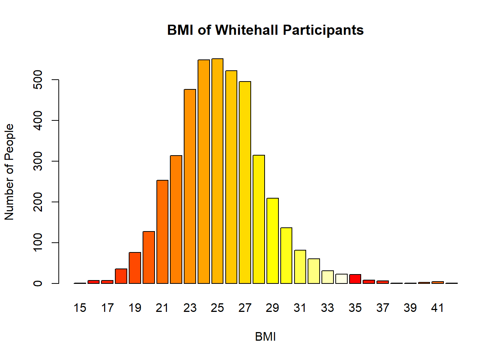
There is also opportunity to create stacked bar graphs in R. We can change the orientation by using the argument ‘horiz = TRUE’
We can make a simple histogram using the hist() function in R. This function takes in a vector of values for which the histogram will be plotted. As with before, we will modify the histogram to add axis labels and a title.
hist(whitehall$bmi, xlab = "BMI", ylab = "Number of People", main = "BMI of Whitehall Participants", col=heat.colors(12), density=100)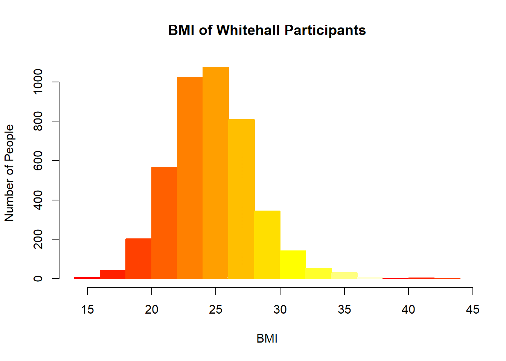
Grouping continuous data is simply an extension of the skills we used to earlier create our binary variable. There are many reasons why you would want to categorise a continuous variable, and cut-offs need to be defined for different categories. BMI is a skewed variable and different parts of the distribution of BMI may have different relationships with diseases that we investigate.
Our first step is to create a new, empty column, which we will title bmi.grouped:
whitehall$bmi.grouped <- NAOur subsequent code will act to populate this new column we’ve created in our data frame.
Our goal is to get R to assign values to this new column, which will be drawn from the existing BMI data recorded for those rows. Remember that each row is a collection (vector) of data that represents a different individual.
We will define BMI of less than 18.5 as 0, between 18 – 25 as 1,between 25-30 as 2, and greater than or equal to 30 as 3. This will be then coded in. This can be achieved with the below simple operators:
whitehall$bmi.grouped [whitehall$bmi<18.5]<-0
whitehall$bmi.grouped [whitehall$bmi >=18.5 & whitehall$bmi<25]<-1
whitehall$bmi.grouped [whitehall$bmi >=25 & whitehall$bmi <30]<-2
whitehall$bmi.grouped [whitehall$bmi >=30]<-3It is important to also check that this variable is in the right format, using class().
class(whitehall.data$bmi.grouped)
[1] “numeric”
R views our new variable as ‘numeric’. Clearly, however, it is an ordered categorical variable. Therefore, we have to ensure that R views the variable as a Factor. Simultaneously, while completing this task, we can also label our groups using the labels=c() function, remembering to use “” to denote different category titles. This can be completed as follows:
whitehall$bmi.grouped <- factor (whitehall$bmi.grouped, labels=c("<18.5", "18.5-24.9", "25-29.9", ">30"))####Question A1.3b.i:
Which type of variable can you plot with a bar chart? When should you use a histogram?
Plot the bar chart that counts the number of participants in each BMI group and save it. Can you give this graph a title? Can you label the y axis and change the colour of the bars in the chart?
Plot a histogram of SBP and describe the distribution.
Regroup SBP in a different way, and decide which grouping best represents the data.
Can you change the number of bins used to plot the histogram of SBP? What is the effect of changing the number of bins?
Categorical variables (such as our newly created BMI categories) can be visually represented using a bar graph.
Histograms should be employed for continuous numerical variables. In our current dataset, variables that could be appropriately represented using a histogram include systolic blood pressure, blood cholesterol, and LDL levels.
To generate this bar graph, we will follow the same process as we did before we had grouped BMI into the new variable. Note that we’ve changed the number of colours on our contiguous spectrum to 4, to reflect the new number of categories.
bmi.grouped.graph <- table(whitehall$bmi.grouped)
barplot(bmi.grouped.graph, horiz = FALSE, xlab = "BMI", ylab = "Number of People", main = "BMI of Whitehall Participants", col=heat.colors(4))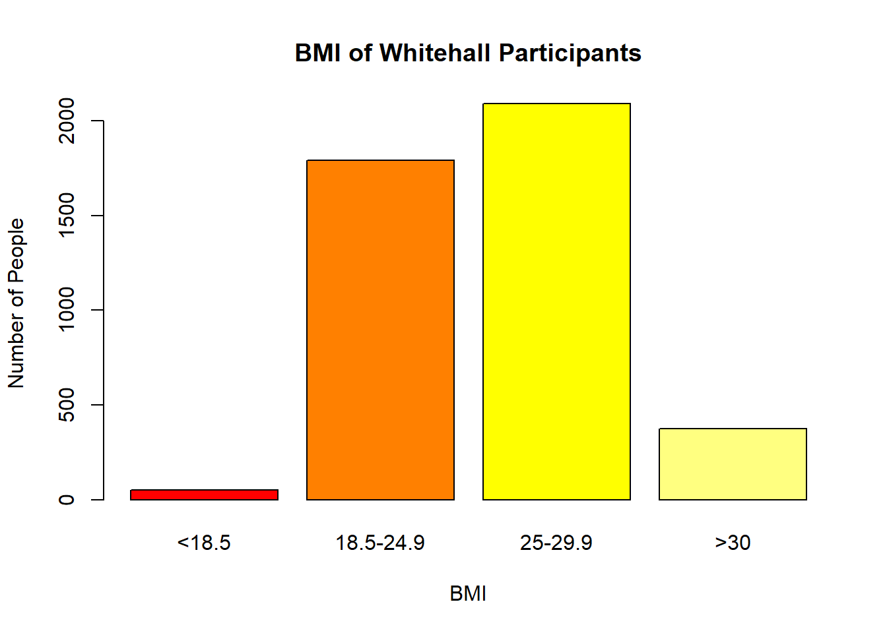
As above, the code for this histogram is as follows:
hist(whitehall$sbp, xlab = "SBP", ylab = "Number of People", main = "Histogram of SBP of Whitehall Participants", col=heat.colors(12), density=100)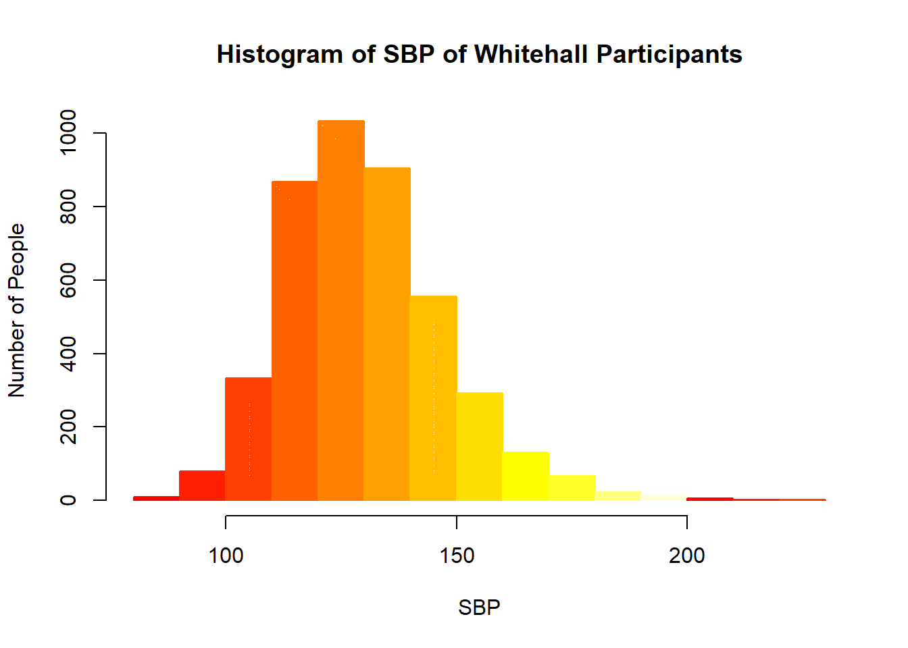
There appears to be a small right skew (positive skew) to this distribution but it is approximately normally distributed.
We will group SBP according to the American College of Cardiology/American Heart Association guidelines for hypertension management, which classes blood pressure according to the following categories. The process for coding this new variable is near identical to the BMI categorisation — have a go yourself!
| Blood Pressure Caterogory | Systolic Blood Pressure |
|---|---|
| Normal | <120 mmHg |
| Elevated | 120-129 mmHg |
| Hypertension | |
| Stage 1 | 130-139 mmHg |
| Stage 2 | >=140 mmHg |
whitehall$sbp.grouped<- NA
whitehall$sbp.grouped [whitehall$sbp<120]<-1
whitehall$sbp.grouped [whitehall$sbp >=120 & whitehall$sbp <130]<-2
whitehall$sbp.grouped [whitehall$sbp >=130 & whitehall$sbp <140]<-3
whitehall$sbp.grouped [whitehall$sbp >=140]<-4
class(whitehall$sbp.grouped)[1] "numeric"whitehall$sbp.grouped <- factor(whitehall$sbp.grouped, labels=c("Normotensive", "Elevated", "Stage 1 Hypertension", "Stage 2 Hypertension"))Normally, R automatically calculates the size of each bin of the histogram. We may not find, however, that the default bins offer an appropriate or sufficient visualisation of the data. We can change the number of bins by adding an additional argument to our hist() code, breaks=()
hist(whitehall$sbp, xlab = "SBP", ylab = "Number of People", main = "Histogram of SBP of Whitehall Participants", col=heat.colors(12), density=100, breaks = 1000)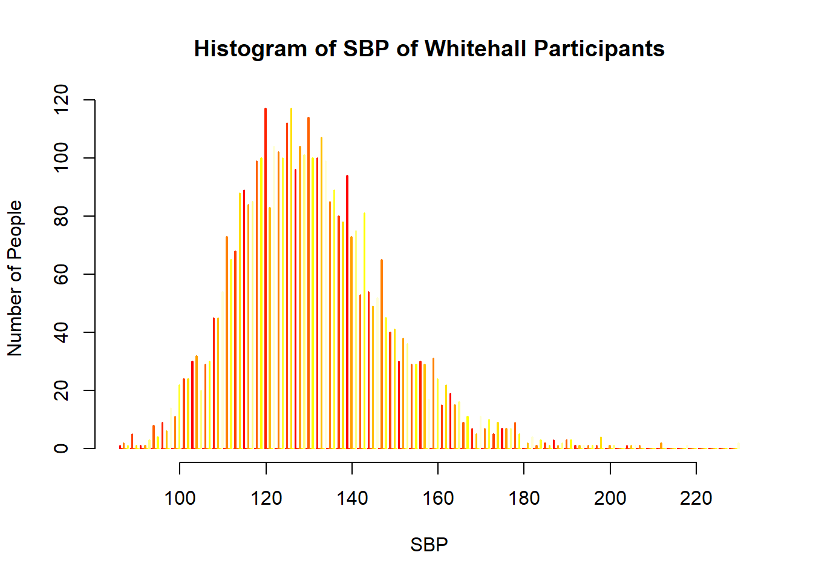
If we try two extremes, we end up with two different graphs — and the distribution and skew is easier to assess.
We could say that this appears to be a more ‘normal’ distribution — even though the underlying data hasn’t changed!
hist(whitehall$sbp, xlab = "SBP", ylab = "Number of People", main = "Histogram of SBP of Whitehall Participants", col=heat.colors(12), density=100, breaks = 10)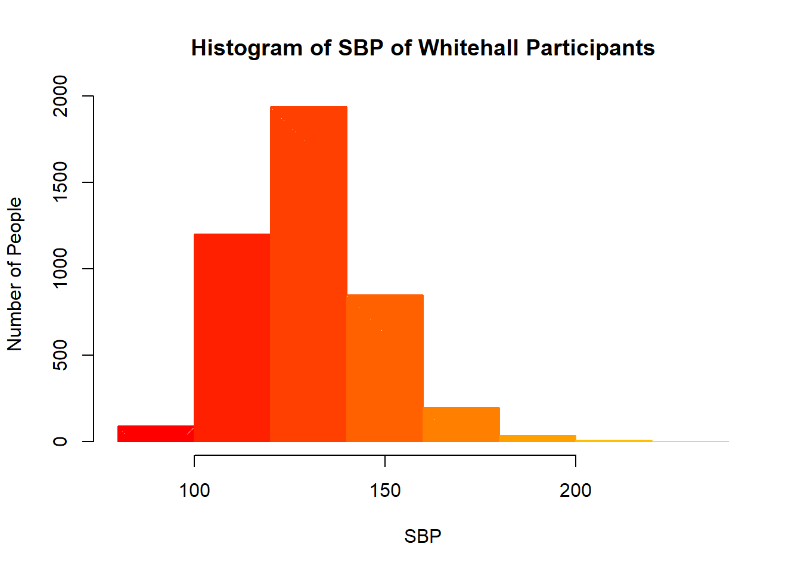
When represented with larger bins, however, the distribution does not seem to be quite as normally distributed. Some of the information at lower levels of SBP and in the far right tail is obscured.
You can download the slides here: 1.4: Estimates and Confidence Intervals
Standard error (SE) can be defined as the standard deviation of the sampling distribution. The standard error is calculated using the formula: \(SE = \frac{\sigma}{\sqrt{n}}\).
OR
Standard Deviation (SD) and sample size (n) can be used to calculate SE as per the following formula:
\[ SE = \frac{SD}{\sqrt{n}} \]
To calculate SE in R, we will need to first calculate both the SD and n and define these calculations as objects. We will then input these calculations into a formula in order to calculate SE. Let’s calculate the SE for SBP, as an example. Remember to name your objects properly and tell R to exclude missing values!
sum function.SBP.n <- sum(!is.na(whitehall$sbp))
SBP.n[1] 4318Calculate SD, noting again that we are rounding to 3 significant figures and excluding NA values.
SBP.sd <- sd(whitehall$sbp, na.rm=T)
round(SBP.sd, digits=3)[1] 17.566To calculate SE using the formula we derived above, and have further simplified our digits instructions.
SBP.se <- SBP.sd/sqrt(SBP.n)
round (SBP.se, 3)[1] 0.267The 95% confidence interval is given by the formula: \(CI = \bar{x} \pm Z \cdot \frac{\sigma}{\sqrt{n}}\).
The formula for the 95% confidence interval is:
\[ CI = \bar{x} \pm Z \cdot \frac{\sigma}{\sqrt{n}} \]
Z0.975 is the 97.5% percentile of the standard normal distribution (~1.96 SD from the mean). We can determine this precisely in R using qnorm(0.975), which equals to 1.959964, as previously demonstrated.
Za <- qnorm(0.975)
SBP.mean <- mean(whitehall$sbp, na.rm=TRUE)
ci.Z_SBP <- c((SBP.mean - (SBP.se*Za)), (SBP.mean + (SBP.se*Za)))
ci.Z_SBP[1] 130.2276 131.2754We can interpret this is as that ’we are 95% confident that the true mean SBP for this population lies between 130.2276 mmHg and 131.2754 mmHg.
Notice how LDLC.sd/sqrt(LDLC.n) is effectively \(\frac{\sigma}{\sqrt{n}}\) which is the SE. The implication of this is that the larger n is (i.e., the sample size), the smaller SE and the narrower the CI will be (i.e., there will be less uncertainty around the estimated mean). We can also plot a histogram, using our knowledge from previous sections, in order to check whether this variable is approximately normally distributed.
Calculate a 95% confidence interval for mean BMI. How would you interpret this interval?
BMI.n <- sum(!is.na(whitehall$bmi))BMI.sd <- sd(whitehall$bmi, na.rm = T)
round(BMI.sd, 3)[1] 3.262BMI.se <- BMI.sd/sqrt(BMI.n)
round(BMI.se, 3)[1] 0.05BMI.mean <- mean(whitehall$bmi, na.rm = T)Za <- qnorm(0.975)
ci.z_BMI <- c((BMI.mean - (BMI.se*Za)), (BMI.mean + (BMI.se*Za)))
ci.z_BMI[1] 25.11954 25.3143495% of sample means for BMI lie between 25.12 and 25.31
ZA <- qnorm (0.995)
ci.z99_BMI <- c((BMI.mean - (BMI.se*ZA)), (BMI.mean + (BMI.se*ZA)))
ci.z99_BMI[1] 25.08894 25.34494The 99% CI is wider. This is because only 1% of your sample means will fall outside this range. Therefore, to be more certain, the range of values will increase to allow for this.
You can download a copy of the slides here: 1.5: Hypothesis Testing
A t-test is an inferential statistic that can be calculated in order to determine the relationship and significance of the difference between the mean values of two separate population variables. There are several assumptions that we take to be true when performing a t-test:
The data are continuous
The sample data have been randomly sampled from a population
There is homogeneity of variance (i.e. the variability of the data in each group is similar)
The distribution is approximately normal
The t-statistic \(t\) is given by:
\[ t = \frac{\bar{X}_1 - \bar{X}_2}{\sqrt{s_p^2 \left( \frac{1}{n_1} + \frac{1}{n_2} \right)}} \]
Where:
\[ s_p^2 = \frac{(n_1 - 1)s_1^2 + (n_2 - 1)s_2^2}{n_1 + n_2 - 2} \]
A one-sample t-test (or student’s t-test) is used on a continuous measurement to decide whether a population mean is equal to a specific value — i.e. is the systolic blood pressure of our population 120, or not. In R, to complete a one-sample t-test, the syntax is:
t.test(x, conf.level=0.95 , …[options] )For a two-sample t-test (independent samples t-test), the following code should be used:
t.test(x[group==1], x[group==2] , conf.level=0.95 , …[options] )For a two-sample test, x specifies the variable on which to perform the t-test, while the group variable defines the groups to be compared. An alternative formulation for the two sample t.test is:
t.test(x~group, data=)See ?t.test for details of the other options within the native R help files.
Recode BMI into a binary variable so that one group has a BMI below 25, and the other group has a BMI of 25 and above. Perform a t-test to compare the mean SBP in those with BMI<25 and those with BMI≥. Answer the questions:
whitehall$bmi_grp4 <- NA
whitehall$bmi_grp4[whitehall$bmi < 25] <- 1
whitehall$bmi_grp4[whitehall$bmi >= 25] <- 2
table(whitehall$bmi_grp4)
1 2
1843 2467 I. **What is the mean SBP where BMI <25 (\(\overline{x_1}\))?
x1 <- aggregate(sbp~bmi_grp4, mean, subset = bmi_grp4 == 1, data = whitehall)
x1 bmi_grp4 sbp
1 1 129.4905I. 129.49mmHg
x2 <- aggregate(sbp~bmi_grp4, mean, subset = bmi_grp4 == 2, data = whitehall)
x2 bmi_grp4 sbp
1 2 131.6524131.65mmHg
**What is the mean difference (\(\overline{x_2}-\overline{x_1}\))?
mean_diff <- x1 - x2
mean_diff bmi_grp4 sbp
1 -1 -2.161945Using basic arithmetic in R:131.6524-129.4905 = 2.1619
What is the test statistic t ?
t <- t.test(sbp~bmi_grp4, data = whitehall)
t
Welch Two Sample t-test
data: sbp by bmi_grp4
t = -4.0068, df = 3959, p-value = 6.267e-05
alternative hypothesis: true difference in means between group 1 and group 2 is not equal to 0
95 percent confidence interval:
-3.219796 -1.104094
sample estimates:
mean in group 1 mean in group 2
129.4905 131.6524 V. What is 95% CI for the mean difference?
95 percent confidence interval: -3.22, -1.10That is to say, we are 95% confident that the difference in the mean systolic blood pressure between those with BMI <25 and BMI 25 lies between 1.10 and 3.22 mmHg.
The p-value is 6.267e-05 = 0.00006267. Remember that p-values provide us with the probability of getting the mean difference we saw here, or one greater, if the null hypothesis was actually true. In this case, that probability is extremely low.Here, our p-value tells us that there is very strong evidence against the null hypothesis (which would be that there is no difference in SBP between our two BMI groups).Therefore, we can say that there is a significant difference in the mean SBP measures in people who are overweight and those who are not.
If a clinician has decided that a difference of at least 5 mmHg is considered a clinically worthwhile difference in blood pressure with regard to morbidity associated with high blood pressure, do you consider the result in A1.5a to be clinically significant?
Answer A1.5b:
No. Note here the difference between clinical and statistical significance. Whilst there is a statistically significant difference between the 2 mean SBP measures, with a mean difference of 2.16 mmHg, the result is not clinically significant.
In Section 6 you learnt about data types and data distributions. Many of the tests that we use for continuous variables assume that the data follow a Gaussian or normal distribution. You have learnt how to create a histogram and use this to assess if the data follow the appropriate distribution. But what do we do if they don’t?
In these situations it is often acceptable to ‘transform’ your variable. This means to apply a mathematical function to each observed value, and then analyse the transformed values. This is a perfectly valid and widely accepted approach to dealing with skewed data. You just need to take care to use it appropriately. For example, you must ensure that if you are comparing means between two or more groups, that you perform the same transformation on all groups in the analysis so that the means are still comparable. Also, you must make sure that you interpret the results of any statistical tests on transformed data appropriately. It is often best to transform any means and mean differences back into the original units.
The table below shows the most useful transformations to deal with different deviations from the normal distribution.
| Form of data | Transformation |
|---|---|
| Slightly right-skewed | Square root |
| Moderately right-skewed | Logarithmic |
| Very right-skewed | Reciprocal |
| Left-skewed | Square |
| Counts | Square root |
| Proportions | Arcsine square root |
If you have decided to use a transformation it is best to plot your raw data (histogram or Q-Q plot depending on your preference), create a new variable with the transformed data, and then plot the transformed variable in the same way to check that the transformation has had the desired effect.
Sometimes variable transformations do not help. For example, if the measures of central tendency are all at the very extreme values of a variable then it is unlikely that any transformation will be useful. In these cases, non-parametric tests may be preferred. We will cover when and how to use non-parametric tests in Module B3.
The natural log is the log to the base of the constant e (also known as Euler’s number), which is approximately 2.718281828459.
If you are interested in why this number is so important, a quick Google of the term Euler’s number should suffice, but you do not need to know why we use this value in order to run this analysis. (NB: Euler’s number is not to be confused with Euler’s constant, which is a different thing entirely!)
Firstly, plot and inspect a histogram of the variable hdlc. Adding a normal curve might help to see what we are looking at.
To do this in R you write:
data$variable_log <- log(data$variable)Use this function to log transform the ‘hdlc’ variable. Now create a new histogram of your transformed variable. How does this compare to your original? Does this transformation help your data? What might you do differently?
whitehall$hdlc.log <- log(whitehall$hdlc)Then to look at the histogram we write:
hist(whitehall$hdlc.log, breaks = 20)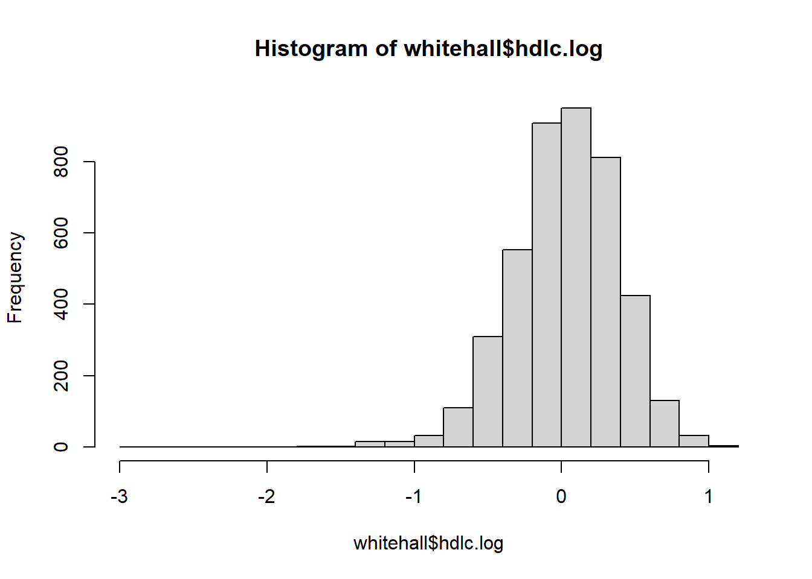
You can see that the data are closer to following the normal curve in this histogram compared to the previous. In the first histogram the most common values (taller bars) are slightly outside of the normal curve to the left of the mean, and there is a more gradual slope on the right-hand side of the mean (peak of the normal curve). This means there are more values in the bins to the right of the mean than to the left of the mean. This is a (very) slight right skew.
In the histogram of the transformed data the highest points are closer to the mean, so this could be classed as a slight improvement, but we are more seeing some of the most common values slightly to the right of the mean, and a more gradual slop off to the left, so a very minimal left skew. This wouldn’t worry us if we saw a skew this slight in the raw data, but in transformed data this is an ‘over-correction’ and indicates that the log transformation might not be the best option for this variable. Referring back to the table at the top of the page, we would select the square root transformation here instead.
In reality, the original hdlc variable was quite close to normality, and a sufficiently large sample size that we would not be worried, but it is a good candidate to experiment on.
get_mode <- function(v){
uniq_vals <- unique(v) # Get unique values
uniq_vals[which.max(tabulate(match(v, uniq_vals)))] # Find the most frequent value
}
x <- c(25, 24, 31, 38, 18, 14, 16, 25, 22, 25, 24, 27, 42, 30, 32)
# Calculate mode
mode_value <- get_mode(x)
mode_value[1] 25You can download a copy of the slides here: A2.1 Key Concepts
The power package
We can estimate sample size and power using the R package ‘pwr’. First you need to install the package and load the library:
install.packages("pwr")
library(pwr)Once this package is installed, we can start calculating our needed sample size to test hypotheses or we can estimate the amount of power a study had to detect a difference is one existed. The next sections will show you how to do this.
Look at the help file for the function pwr.t.test. What is the default value for significance level?
What information do you need to conduct a sample size estimate for difference between means?
The default value for significance level (denoted as ’sig.level‘) in the function is 0.05. This is indicated by sig.level=0.05, and can be changed by specifying a different number in the function. So you can work out the sample size you would need for different significance levels.
To conduct a sample size estimate between means you need the power and alpha values you have decided on, the estimated mean of each group in the population, or the estimated difference between groups in the population, and the estimated population standard deviation.
You can download a copy of the slides here: A2.2 Power calculations for a difference in means
Here is an example:
Estimate the sample size needed to compare the mean systolic blood pressure (SBP) in two populations. From a pilot study, you think that the group with lower blood pressure will have a mean SBP of 120 mm Hg, and the standard deviation (SD) of both groups will be 15 mm Hg. You have decided that you are interested in a minimum difference of 5 mm Hg, and you want 90% power, and a 5% significance level.
In R, we need to calculate two statistics to estimate sample size: delta (i.e. the expected difference between groups) and sigma (variance, which in this case is the pooled standard deviation). Once we have delta and sigma, we can calculate the effect size we expect to see, which is Cohen’s d. We can guess delta and sigma from looking at past studies or by running a pilot study. Cohen’s d is estimated by dividing the delta by the sigma.
Cohen’s d
d <- 5/15
d[1] 0.3333333Use the ‘pwr.t.test’ command to assess the sample size needed to detect this effect size.
power1 <-pwr.t.test(d=d, power=0.9, sig.level =0.05 )
power1
Two-sample t test power calculation
n = 190.0991
d = 0.3333333
sig.level = 0.05
power = 0.9
alternative = two.sided
NOTE: n is number in *each* groupYou need approximately 190 participants in each group, and 380 participants overall.
n is number in each group
If we want to estimate the power of a given sample size, we omit the ‘power’ option, and instead use the ‘n=’ option:
power2 <-pwr.t.test(n=190, d=d, sig.level =0.05 )
power2
Two-sample t test power calculation
n = 190
d = 0.3333333
sig.level = 0.05
power = 0.8998509
alternative = two.sided
NOTE: n is number in *each* groupWe can see here that recruiting 190 participants in each blood pressure group would enable our study to have 90% power.
how much power would we have ended up with in our study if we only managed to recruit 150 participants in each group, but the variance of our study sample was smaller than what we anticipated (so SD=12) ?
d1 <- 5/12
d1[1] 0.4166667power3 <- pwr.t.test(n=150, d=d1, sig.level = 0.05)
power3
Two-sample t test power calculation
n = 150
d = 0.4166667
sig.level = 0.05
power = 0.9491662
alternative = two.sided
NOTE: n is number in *each* groupWe recruited fewer participants, which would decrease our power, but since our variance was lower our power actually increased overall to 95%
#A2.3 Power calculations for two proportions {#sec-A2.3}
You can download a copy of the slides here: A2.3 Power calculations for a difference in proportions
Here is an example:
Estimate the sample size needed to compare the proportion of people who smoke in two populations. From previous work, you think that 10% of the people in population A smoke, and that an absolute increase of 5% in population B (compared to population A) would be clinically significant. You want 90% power, and a 5% significance level.
In this scenario we use the pwr.2p.test command in the power package.
alpha = sig.level option and is equal to 0.05
power = 0.90
p1 = 0.10
p2 = 0.15
power4 <-pwr.2p.test(h=ES.h(p1=0.1, p2=0.15), sig.level=0.05, power=0.9)
power4
Difference of proportion power calculation for binomial distribution (arcsine transformation)
h = 0.1518977
n = 910.8011
sig.level = 0.05
power = 0.9
alternative = two.sided
NOTE: same sample sizesYou estimate that you need 911 participants from each population, with a total sample of around 1,821.
If you wanted different sample sizes in each group, you would use the command pwr.2p2n.test instead.
If we type plot(power4) we can see how the power level changes with varying sample sizes:
plot(power4)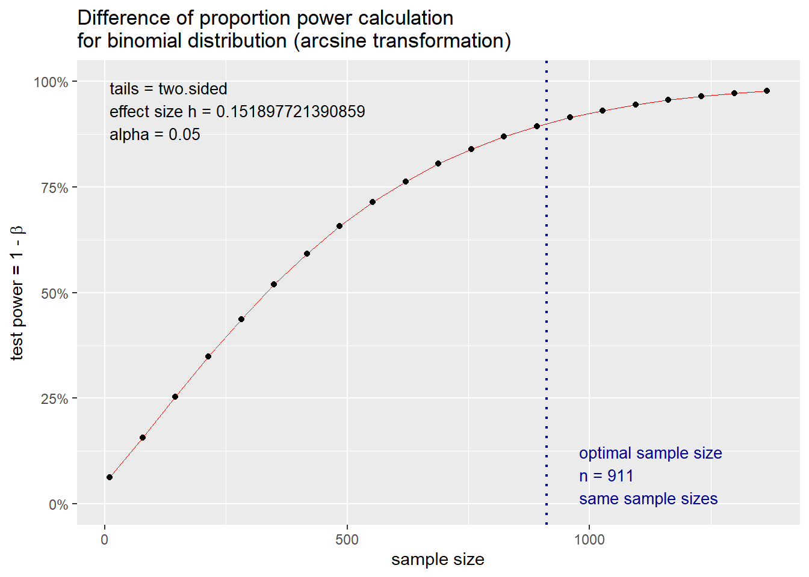
Unfortunately, the funding body has informed you, you only have enough resources to recruit a fixed number of people. Can you estimate the power of a study if you only had 500 people in total (with even numbers in each group)?
power5 <- pwr.2p.test(h=ES.h(p1=0.1, p2=0.15), n = 250, sig.level = 0.05)
power5
Difference of proportion power calculation for binomial distribution (arcsine transformation)
h = 0.1518977
n = 250
sig.level = 0.05
power = 0.396905
alternative = two.sided
NOTE: same sample sizesIn this scenario, the power of the study would be only 0.40. Most people would regard such a study as under-powered as there is only a 40% chance that the effect will be detected if one truly exists.
You can download a copy of the slides here: A2.4: Sample Size Calculations for RCTs
Sample size calculation for testing a hypothesis (Clinical trials or clinical interventional studies)
The sample size \(n\) for each group in an RCT with continuous outcomes is given by:
\[ n = \frac{{2 \sigma^2 \left(Z_{\frac{\alpha}{2}} + Z_{\beta}\right)^2}}{{\Delta^2}} \]
Where:
This formula is used to ensure the study has enough power to detect a clinically meaningful difference.
Here is an example:
In a parallel RCT, 25% of the subjects on the standard therapy had a successful outcome. It is only of clinical relevance if a 40% absolute improvement is observed in the new therapy. How many subjects are required in order to detect this difference with 80% power at the 5% level of significance?
In this case we need to assess a difference in proportions again, this time with an effect size that has a 0.40 difference between the groups:
power6<-pwr.2p.test(h=ES.h(p1=0.25, p2=0.65), power=0.8, sig.level=0.05)
power6
Difference of proportion power calculation for binomial distribution (arcsine transformation)
h = 0.8282914
n = 22.88076
sig.level = 0.05
power = 0.8
alternative = two.sided
NOTE: same sample sizes23 subjects per group and 46 subjects are required in total.
In the same parallel trial as described in the example above, we still observe that 25% of the subjects on the standard therapy had a successful outcome, but this time it is only of clinical relevance if a 40% relative improvement is observed in the new therapy. How many subjects are required in order to detect this difference with 80% power at the 5% level of significance?
First you need to work out what a 40% relative increase on 25% is: 0.25*1.40=35% of subjects would need to have a successful outcome for there to be clinical relevance.
power7<-pwr.2p.test(h=ES.h(p1=0.25, p2=0.35), power=0.8, sig.level=0.05)
power7
Difference of proportion power calculation for binomial distribution (arcsine transformation)
h = 0.2189061
n = 327.5826
sig.level = 0.05
power = 0.8
alternative = two.sided
NOTE: same sample sizesWe need many more patients than in the example above due to the small effect size that we now wish to detect.
You can download a copy of the slides here: A2.5: Sample size calculations for cross-sectional studies (or surveys)
To determine the sample size \(n\) for estimating a population proportion in a cross-sectional study, use the following formula:
\[n = \frac{{Z_{\frac{\alpha}{2}}^2 \cdot p \cdot (1 - p)}}{{d^2}}\]
Where:
This formula helps ensure that the sample size is large enough to accurately estimate the population proportion with a specified confidence level and precision.
Example of estimating sample size for a hypothesis in a cross-sectional study
You have been asked to help with a power calculation for a cross-sectional study, to estimate the point prevalence of obesity within a population. A study five years ago in this population found that 30% of people were obese, but the government thinks this has increased by 10% (to a point prevalence of 40%). Estimate the sample size needed for this study, assuming that the previous point prevalence of 30% is your ‘null hypothesis’. You want 80% power.
power8 <-pwr.p.test(h=ES.h(p1=0.3, p2=0.4), power=0.8, sig.level=0.05)
power8
proportion power calculation for binomial distribution (arcsine transformation)
h = 0.2101589
n = 177.7096
sig.level = 0.05
power = 0.8
alternative = two.sidedYou need about 178 participants in your study to estimate this prevalence.
One researcher has suggested that the proportion of the population who is obese may actually have decreased by 10% in the last five years (i.e. to 20%). How would this change your estimate for the sample size needed?
power9 <-pwr.p.test(h=ES.h(p1=0.3, p2=0.2), power=0.8, sig.level=0.05)
power9
proportion power calculation for binomial distribution (arcsine transformation)
h = 0.2319843
n = 145.8443
sig.level = 0.05
power = 0.8
alternative = two.sidedThe estimated sample size has now reduced slightly, to 146.
Based the outputs above, we can conclude that more data are needed to detect a change in proportion from 0.3 to 0.4 than from 0.3 to 0.2. For a fixed absolute difference (here the absolute difference in proportions is 0.1), larger sample sizes are needed to obtain a given level of power as the proportions approach 0.5.
Recall that the standard error (se) of the sampling distribution of p is \(SE = \sqrt{\frac{p(1 - p)}{n}}\).
Where: - ( p ) is the sample proportion, - ( n ) is the sample size.
As p gets closer to 0.5, the amount of variability increases (se is largest when p=0.5) and, therefore, more data are needed to detect a change in proportions of 0.1.
You can download a copy of the slides here: A2.6: Sample size calculations for case-control studies
To calculate the sample size \(n\) for each group (cases and controls) in a case-control study, use the following formula:
\[ n = \frac{\left(Z_{\frac{\alpha}{2}} + Z_{\beta}\right)^2 \cdot [p_1 (1 - p_1) + p_2 (1 - p_2)]}{(p_1 - p_2)^2} \]
Where:
This formula ensures sufficient power to detect a statistically significant difference in exposure between cases and controls.
Estimating sample size for case-control studies
You have now been asked to help another research group with their power calculations. They want to conduct a case-control study of sterilization (tubal ligation) and ovarian cancer. You could use parameters from a recent paper (reference below). Parameters of interest might include the proportion of cases or controls with tubal ligation, and the odds ratio.
Tubal ligation, hysterectomy and epithelial ovarian cancer in the New England Case-Control Study. Rice MS, Murphy MA, Vitonis AF, Cramer DW, Titus LJ, Tworoger SS, Terry KL. Int J Cancer. 2013 Nov 15;133(10):2415-21. doi: 10.1002/ijc.28249. Epub 2013 Jul 9.
Looking at the paper, you could extract the following relevant information needed to estimate your sample size:
Proportion of controls with tubal ligation: 18.5%.
Proportion of cases with tubal ligation: 12.8%.
Odds ratio for the association between tubal ligation and ovarian cancer: 0.82.
This study used 2,265 cases and 2,333 controls.
You probably won’t need to use all of these parameters.
If you want to use a test of proportions to assess how large your sample needs to be for an expected odds ratio of the association between tubal ligation and ovarian cancer, you need to have two proportions for the command. Above we assume that 18% of controls have had tubal ligation, so we then can use this formula to work background from an expected odds ratio to see the other proportion:
\[p2 = {\frac{(OR*p1)}{(1+p1(OR-1))}}\]
Example 2.6
how many people do you need to recruit into your study if your odds ratio is less than 0.8 and you want to have power of at least 80% ?
power10 <-pwr.p.test(h=ES.h(p1=0.9, p2=0.8), power=0.8, sig.level=0.05)
power10
proportion power calculation for binomial distribution (arcsine transformation)
h = 0.2837941
n = 97.45404
sig.level = 0.05
power = 0.8
alternative = two.sidedLooking at the plot, how many people do you need to recruit into your study if your odds ratio is less than 0.8 and you want to have power of at least 80%?
If the odds ratio in this scenario is ≤ 0.8, (i.e. an effect size of 20% -40%) then you can reach a power ≥ 0.8 with a sample size of around 5000 people. If the true odds ratio is closer to 0.9 (i.e. a 10% effect size), then you would require a much larger sample size.
We substitute a proportion of 18% and an OR of 0.85 into the formula:
\[p2 = {\frac{(OR*p1)}{(1+p1(OR-1))}}\]
p2= (0.85*0.18)/(1+0.18(0.85-1)
Using R like a calculator, we get:
(0.85*0.18)/(1+0.18*(0.85-1))[1] 0.1572456power11 <-pwr.2p.test(h=ES.h(p1=0.18, p2=0.1572), power=0.9, sig.level=0.05)
power11
Difference of proportion power calculation for binomial distribution (arcsine transformation)
h = 0.06092931
n = 5660.744
sig.level = 0.05
power = 0.9
alternative = two.sided
NOTE: same sample sizesYou need 5661 cases and 5661 controls, so about 11,322 participants in total, to obtain 90% power if your OR of tubal ligation with ovarian cancer is 0.85.
power12 <- power.t.test(delta = 6.0 - 5.5, sd = 1, power = 0.9, sig.level = 0.05, type = "two.sample", alternative = "two.sided")
power12
Two-sample t test power calculation
n = 85.03129
delta = 0.5
sd = 1
sig.level = 0.05
power = 0.9
alternative = two.sided
NOTE: n is number in *each* groupYou can download a copy of the slides here: B1.1 Correlation and Scatterplots
In this section we will use correlations and scatter plots to examine the relationship between two continuous variables.
Let us now assess if there is a relationship between BMI and SBP. A scatterplot is a quick way to have a first impression on how variables may relate to each other.There are several ways to create a scatterplot in R. The basic function is plot(), used as plot(x,y) where x and y denote the (x,y) points to plot.
plot(whitehall$bmi, whitehall$sbp, xlab="BMI (kg/m2)",ylab="Systolic blood pressure (mm Hg)", cex=0.8)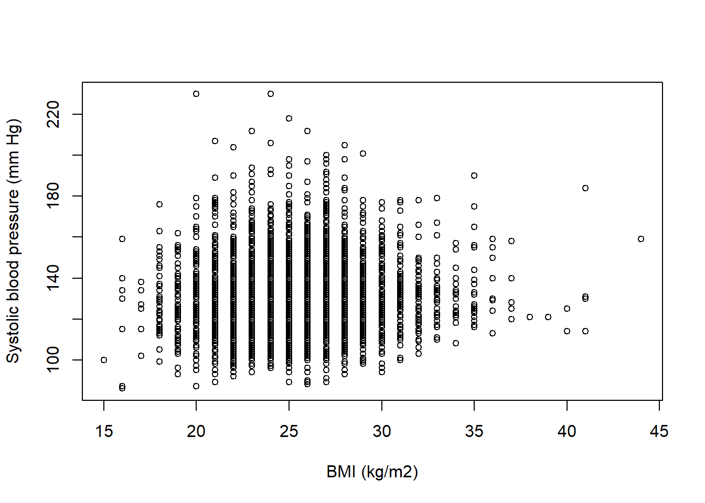
If we look at the plot we can see some vertical lines as BMI was collected at discrete values and each vertical line represent individuals with the same BMI. Also there does not appear to be an obvious relationship between the two variables as the dots all appear in a big clump in the middle, without any direction to them.
Correlations
We can also assess if there is any relationship between age and SBP by looking at their correlation. In R, you can use cor() to obtain correlations. Also cor.test() can be used if a test of association is needed.
In the presence of missing values it is important to set the argument ’use‘ to specify the method for computing correlations otherwise cor() will not work. If ’use‘ is set to use=”complete.obs“ then the correlation is computed after casewise deletion of missing values. If ’use‘ is set to use=”pairwise.complete.obs” then the correlation between each pair of variables is computed using all complete pairs of observations on those variables.
Interpret the correlation coefficient between SBP and BMI.
corrbp_bmi <- cor(whitehall[, 6:7], use="complete.obs")
round(corrbp_bmi, 2) sbp bmi
sbp 1.00 0.09
bmi 0.09 1.00The correlation between SBP and BMI is 0.09 and it is a weak positive correlation.
You can download a copy of the slides here: B1.2 Differences Between Means (ANOVA I)
The ANOVA procedure allows us to establish whether there is evidence that the mean SBP values across the BMI groups are not all equal. You use an ANOVA to test for differences in means across levels of a categorical variable (not a continuous one).
We use aov() to perform ANOVA, and we get a summary of the ANOVA table using summary(). aov() can be used in two ways as follows:
fit3 <- aov(y ~ x, data=my.data)
fit3 <- aov(my.data$y ~ my.data$x)We are going to use this to test for a significant difference in mean SBP across the BMI groups.
whitehall$bmi_fact<-factor(whitehall$bmi_grp4)
fit3 <- aov(sbp~bmi_fact, data=whitehall)
summary(fit3) Df Sum Sq Mean Sq F value Pr(>F)
bmi_fact 1 4922 4922 16.07 6.23e-05 ***
Residuals 4299 1317058 306
---
Signif. codes: 0 '***' 0.001 '**' 0.01 '*' 0.05 '.' 0.1 ' ' 1
26 observations deleted due to missingnessThe result indicates there are differences in SBP across the four categories of BMI as the p-value of 0.0001 is highly significant.
However, an ANOVA a global test and does not tell us which BMI groups are significantly different from each other. You will learn how to produce comparisons of all possible pairings of the BMI groups, as well as many other aspects of the ANOVA test in Module B2.
You can download a copy of the slides here: B1.3a Univariable Linear Regression
In section Section 16 we examined the association between two continuous variables (SBP and BMI [continuous]) using scatterplots and correlations. We can also assess the relationship between two continuous variables by using linear regression. In comparison with the regression using a categorical exposure, if we have a continuous variable we interpret the beta coefficient as the “average increase in [outcome] for a 1 unit change in [exposure]’.
We can fit a simple linear regression model to the data using the lm() function as lm(formula, data) and the fitted model can be saved to an object for further analysis. For example my.fit <- lm(Y ~ X, data = my.data) performs a linear regression of Y (response variable) versus X (explanatory variable) by taking them from the dataset my.data. The result is stored on an object called my.fit.
Other different functional forms for the relationship can be specified via formula. The data argument is used to tell R where to look for the variables used in the formula.
When the model is saved in an object we can use the summary() function to extract information about the linear model (estimates of parameters, standard errors, residuals, etc). The function confint() can be used to compute confidence intervals of the estimates in the fitted model.
Fit a linear model of SBP versus BMI (continuous) in the Whitehall data and interpret your findings.
fit1 <- lm(sbp ~ bmi, data=whitehall)
summary(fit1)
Call:
lm(formula = sbp ~ bmi, data = whitehall)
Residuals:
Min 1Q Median 3Q Max
-43.087 -12.169 -1.710 9.831 101.667
Coefficients:
Estimate Std. Error t value Pr(>|t|)
(Intercept) 119.15237 2.07540 57.412 < 2e-16 ***
bmi 0.45902 0.08162 5.624 1.99e-08 ***
---
Signif. codes: 0 '***' 0.001 '**' 0.01 '*' 0.05 '.' 0.1 ' ' 1
Residual standard error: 17.47 on 4299 degrees of freedom
(26 observations deleted due to missingness)
Multiple R-squared: 0.007303, Adjusted R-squared: 0.007072
F-statistic: 31.62 on 1 and 4299 DF, p-value: 1.989e-08confint(fit1) 2.5 % 97.5 %
(Intercept) 115.083517 123.221220
bmi 0.298996 0.619046For every 1 unit higher BMI, SBP on average increases 0.46 mmHg (95% CI: 0.30-0.62), and this association is statistically significant (p<0.001)
You can download a copy of the slides here: B1.3 Univariable Linear Regression
Instead of conducting multiple pairwise comparisons in an ANOVA, we could run a linear regression to compare the mean difference in each age group compared to a reference category.
First, we need to reclassify our exposure, bmi_grp4 and tell R to treat our exposure as a categorical variable:
whitehall$bmi_grp4 <- NA
whitehall$bmi_grp4[whitehall$bmi < 18.5] <- 1
whitehall$bmi_grp4[whitehall$bmi >= 18.5 & whitehall$bmi < 25] <- 2
whitehall$bmi_grp4[whitehall$bmi >= 25 & whitehall$bmi < 30] <- 3
whitehall$bmi_grp4[whitehall$bmi >= 30] <- 4whitehall$bmi_fact <- factor(whitehall$bmi_grp4)We can use is.factor() to check that the new created variable is indeed a factor variable.
is.factor(whitehall$bmi_fact)[1] TRUEThen, we use table() to count the number of participants in each BMI category.
table(whitehall$bmi_fact)
1 2 3 4
50 1793 2091 376 We can use aggregate() to compute summary statistics for SBP by BMI.
aggregate(whitehall$sbp, list(whitehall$bmi_fact), FUN=mean, na.rm=TRUE) Group.1 x
1 1 126.6600
2 2 129.5695
3 3 131.3661
4 4 133.2394The results indicate that there are mean SBP increases across the four categories of BMI.
Now we fit a linear regression model called fit2 with SBP as our response and BMI groups as our explanatory variable.
fit2 <- lm(sbp ~ bmi_fact, data=whitehall)
summary(fit2)
Call:
lm(formula = sbp ~ bmi_fact, data = whitehall)
Residuals:
Min 1Q Median 3Q Max
-43.366 -12.239 -1.570 9.634 100.430
Coefficients:
Estimate Std. Error t value Pr(>|t|)
(Intercept) 126.660 2.474 51.187 <2e-16 ***
bmi_fact2 2.910 2.509 1.160 0.2462
bmi_fact3 4.706 2.504 1.879 0.0602 .
bmi_fact4 6.579 2.634 2.498 0.0125 *
---
Signif. codes: 0 '***' 0.001 '**' 0.01 '*' 0.05 '.' 0.1 ' ' 1
Residual standard error: 17.5 on 4297 degrees of freedom
(26 observations deleted due to missingness)
Multiple R-squared: 0.00488, Adjusted R-squared: 0.004185
F-statistic: 7.024 on 3 and 4297 DF, p-value: 0.0001041If we want confidence intervals, we could then type:
confint(fit2, level=0.95) 2.5 % 97.5 %
(Intercept) 121.8087587 131.511241
bmi_fact2 -2.0089779 7.828006
bmi_fact3 -0.2029698 9.615215
bmi_fact4 1.4156290 11.743094By default R will use the lowest category of bmi_fact as the reference in a regression. But this category is the smallest and hence it is not a good reference category as all comparisons with it will have large confidence intervals. We can change the reference category using the ‘relevel’ function:
whitehall <- within(whitehall, bmi_fact <- relevel(bmi_fact,ref=2))Then we fit the same linear regression again:
fit2 <- lm(sbp ~ bmi_fact, data=whitehall)
summary(fit2)
Call:
lm(formula = sbp ~ bmi_fact, data = whitehall)
Residuals:
Min 1Q Median 3Q Max
-43.366 -12.239 -1.570 9.634 100.430
Coefficients:
Estimate Std. Error t value Pr(>|t|)
(Intercept) 129.5695 0.4134 313.389 < 2e-16 ***
bmi_fact1 -2.9095 2.5088 -1.160 0.246221
bmi_fact3 1.7966 0.5638 3.187 0.001449 **
bmi_fact4 3.6698 0.9926 3.697 0.000221 ***
---
Signif. codes: 0 '***' 0.001 '**' 0.01 '*' 0.05 '.' 0.1 ' ' 1
Residual standard error: 17.5 on 4297 degrees of freedom
(26 observations deleted due to missingness)
Multiple R-squared: 0.00488, Adjusted R-squared: 0.004185
F-statistic: 7.024 on 3 and 4297 DF, p-value: 0.0001041confint(fit2, level=0.95) 2.5 % 97.5 %
(Intercept) 128.7589451 130.380083
bmi_fact1 -7.8280063 2.008978
bmi_fact3 0.6913165 2.901901
bmi_fact4 1.7239246 5.615770Looking at the output above, the average level of SBP increases as BMI groups get higher. For a BMI group 4 (obese) compared to BMI group 2 (normal weight), the average SBP is 3.7 mmHg higher (95% CI: 1.7-5.6, p<0.001).
You can download a copy of the slides here: B1.4a Multiple Linear Regression
How do we fit a model with more than one explanatory variable?
Here, we will include each covariate one at a time into the model, starting with BMI, then adding age_grp and lastly adding currsmoker. We like to add variables one at time so that we can see how each new additional covariate affects the other variables already in the model- this gives us an idea as to the mechanisms underlying an association.
To build a multivariable model, the command is the same as before:
my.fit <- lm(Y ~ X+ X2 + X3, data = my.data) Therefore, to examine the impact the association of BMI group on SBP, adjusted for LDL-C, we write:
fit3 <- lm(sbp ~ bmi_fact+ldlc, data=whitehall)
summary(fit3)
Call:
lm(formula = sbp ~ bmi_fact + ldlc, data = whitehall)
Residuals:
Min 1Q Median 3Q Max
-43.769 -12.106 -1.685 9.805 100.780
Coefficients:
Estimate Std. Error t value Pr(>|t|)
(Intercept) 133.0774 1.2194 109.131 < 2e-16 ***
bmi_fact1 -3.7999 2.5360 -1.498 0.134107
bmi_fact3 1.9109 0.5656 3.379 0.000735 ***
bmi_fact4 3.7098 0.9921 3.739 0.000187 ***
ldlc -1.0539 0.3444 -3.060 0.002227 **
---
Signif. codes: 0 '***' 0.001 '**' 0.01 '*' 0.05 '.' 0.1 ' ' 1
Residual standard error: 17.48 on 4271 degrees of freedom
(51 observations deleted due to missingness)
Multiple R-squared: 0.007247, Adjusted R-squared: 0.006318
F-statistic: 7.795 on 4 and 4271 DF, p-value: 2.958e-06Being overweight (BMI group 3) compared with normal weight (group 2) is associated with a 1.91 mmHg higher SBP on average, once adjusted for LDL-C (95% CI: 0.80-3.02, p=0.001). This is a slightly stronger association for the overweight BMI group than before we adjusted for LDL-C.
Note that each covariate in the model is adjusted for all other covariates in the model. So BMI group is adjusted for LDL-C, and LDL-C is adjusted for BMI group. In other words, we can see the association of BMI group independent of LDL-C, and vice versa.
What is the association of BMI group with SBP, once adjusted for LDL-C and current smoking?
fit4 <- lm(sbp ~ bmi_fact+ldlc+currsmoker, data=whitehall)
summary(fit4)
Call:
lm(formula = sbp ~ bmi_fact + ldlc + currsmoker, data = whitehall)
Residuals:
Min 1Q Median 3Q Max
-43.857 -12.133 -1.698 9.869 101.087
Coefficients:
Estimate Std. Error t value Pr(>|t|)
(Intercept) 133.1638 1.2250 108.709 < 2e-16 ***
bmi_fact1 -3.8183 2.5372 -1.505 0.132420
bmi_fact3 1.8963 0.5664 3.348 0.000820 ***
bmi_fact4 3.6897 0.9928 3.717 0.000205 ***
ldlc -1.0536 0.3446 -3.057 0.002248 **
currsmoker -0.5632 0.8072 -0.698 0.485360
---
Signif. codes: 0 '***' 0.001 '**' 0.01 '*' 0.05 '.' 0.1 ' ' 1
Residual standard error: 17.48 on 4265 degrees of freedom
(56 observations deleted due to missingness)
Multiple R-squared: 0.007334, Adjusted R-squared: 0.006171
F-statistic: 6.303 on 5 and 4265 DF, p-value: 7.781e-06On average, being obese is associated with a 3.7 mmHg higher SBP than being normal weight, once adjusted for LDL-C and current smoking (95% CI 1.74-5.63, p<0.001). This association was not affected by additional adjustment for current smoking.
Each covariate in the model can be interpreted as adjusted for the other covariates in the model. So being a current smoker is associated with a -0.56 mmHg lower SBP compared to non-smokers, once adjusted for LDL-C and BMI group. The 95% CI crosses the null value (which is 0 in this case, as we are not working with ratios; -2.15-1.02) so this association is not statistically significant.
In the following, we want to investigate the association between body mass index (kg/m^2) and vitamin D (nmol/L) adjusting for HDL cholesterol (mmol/L) in the Whitehall data.
Fit a linear regression model with vitamin D as the dependent variable and BMI as the independent variable.
Fit a linear regression model with vitamin D as the dependent variable and BMI as the independent variable adjusting for HDL cholesterol.
Compare the coefficient of BMI in the two models.
fit5 <- lm(vitd~bmi, data=whitehall)
summary(fit5)
Call:
lm(formula = vitd ~ bmi, data = whitehall)
Residuals:
Min 1Q Median 3Q Max
-37.30 -11.67 -1.28 9.41 363.02
Coefficients:
Estimate Std. Error t value Pr(>|t|)
(Intercept) 60.74523 2.13700 28.425 <2e-16 ***
bmi -0.13347 0.08404 -1.588 0.112
---
Signif. codes: 0 '***' 0.001 '**' 0.01 '*' 0.05 '.' 0.1 ' ' 1
Residual standard error: 18 on 4308 degrees of freedom
(17 observations deleted due to missingness)
Multiple R-squared: 0.0005851, Adjusted R-squared: 0.0003531
F-statistic: 2.522 on 1 and 4308 DF, p-value: 0.1123confint(fit5, level=0.95) 2.5 % 97.5 %
(Intercept) 56.5556026 64.93485072
bmi -0.2982367 0.03130403fit6 <- lm(vitd~bmi + hdlc, data=whitehall)
summary(fit6)
Call:
lm(formula = vitd ~ bmi + hdlc, data = whitehall)
Residuals:
Min 1Q Median 3Q Max
-37.00 -11.56 -1.20 9.35 363.06
Coefficients:
Estimate Std. Error t value Pr(>|t|)
(Intercept) 63.26611 2.60935 24.246 <2e-16 ***
bmi -0.17711 0.08811 -2.010 0.0445 *
hdlc -1.32227 0.76558 -1.727 0.0842 .
---
Signif. codes: 0 '***' 0.001 '**' 0.01 '*' 0.05 '.' 0.1 ' ' 1
Residual standard error: 17.99 on 4282 degrees of freedom
(42 observations deleted due to missingness)
Multiple R-squared: 0.001272, Adjusted R-squared: 0.0008053
F-statistic: 2.726 on 2 and 4282 DF, p-value: 0.06557confint(fit6, level=0.95) 2.5 % 97.5 %
(Intercept) 58.1504235 68.381798056
bmi -0.3498436 -0.004380142
hdlc -2.8231990 0.178663530The association between vitamnin D and BMI was substantially attenuated after adjusting for HDL cholesterol
Here we are going to practice using F-tests to help choose the best fitting model for our data.
You can download a copy of the slides here: B1.5 Testing Regression Coefficients
When estimating the effect of a particular exposure, we have seen that it is important to include potential confounding variables in the regression model, and that failure to do so will lead to a biased estimate of the effect.
To assess if we have included important confounders in our model, we can run a statistical test to see if the extra coefficients are significantly contributing to the model fit. This is helpful for testing the overall inclusion of a categorical variable to a model (where some levels may have a significant association and other levels may not), or testing the addition of multiple variables to the model.
We can do this in R using the ‘linearHypothesis’ function within the package ‘car’
library(car)
linearHypothesis(fit4, c("bmi_fact1=0", "bmi_fact3=0", "bmi_fact4=0"))
Linear hypothesis test:
bmi_fact1 = 0
bmi_fact3 = 0
bmi_fact4 = 0
Model 1: restricted model
Model 2: sbp ~ bmi_fact + ldlc + currsmoker
Res.Df RSS Df Sum of Sq F Pr(>F)
1 4268 1310900
2 4265 1303805 3 7095 7.7364 3.76e-05 ***
---
Signif. codes: 0 '***' 0.001 '**' 0.01 '*' 0.05 '.' 0.1 ' ' 1The output reveals that the F-statistic for this joint hypothesis test (that all coefficients of the BMI variable are equal to 0) is about 7.7 and the corresponding p-value is <0.001.
Whilst the main regression output shows that not all levels of BMI group are significantly associated SBP, the F-test shows that overall this variable is significantly explaining variance in the model (F[3,4265]=7.74, p<0.001).
Run an F-test to assess if both LDL-C and current smoking are jointly contributing to model fit (i.e. test both these coefficients at the same time).
linearHypothesis(fit4, c("ldlc=0", "currsmoker=0"))
Linear hypothesis test:
ldlc = 0
currsmoker = 0
Model 1: restricted model
Model 2: sbp ~ bmi_fact + ldlc + currsmoker
Res.Df RSS Df Sum of Sq F Pr(>F)
1 4267 1306812
2 4265 1303805 2 3007.2 4.9186 0.007351 **
---
Signif. codes: 0 '***' 0.001 '**' 0.01 '*' 0.05 '.' 0.1 ' ' 1You can see from the output that the null hypothesis is that both variables have a coefficient equal to 0. However, there is evidence to reject this null hypothesis (F[2,4265]=4.92, p<0.01). These variables are significantly contributing to model fit.
You can download a copy of the slides here: B1.5b Presentation of Regression Results
You can download a copy of the slides here: B1.6 Regression Diagnostics
One of the final steps of any linear regression is to check that the model assumptions are met. Satisfying these assumptions allows you to perform statistical hypothesis testing and generate reliable confidence intervals.
Here we are going to practice checking the normality and homoscedasticity of the residuals.
We need to make sure that our residuals are normally distributed with a mean of 0. This assumption may be checked by looking at a histogram or a Q-Q-Plot.
To look at our residuals, we can use the function resid(). This function extracts the model residuals from the fitted model object (for example, in our case we would type resid(fit1)).
To check our residuals from the model we fit in B1.4 we would type:
hist(resid(fit4), main="Histogram of the residuals", xlab="Residuals")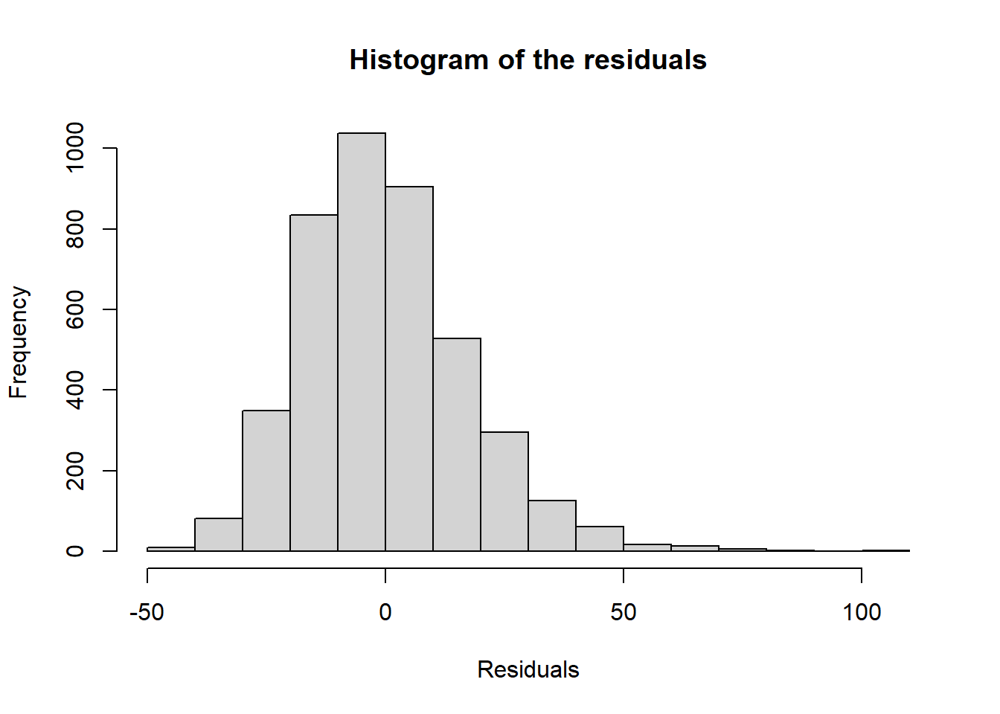
sum(resid(fit4))[1] 5.186462e-12It appears that our residuals are normally distributed with zero mean.
One of main assumptions of ordinary least squares linear regression is that there is homogeneity of variance (i.e. homoscedasticity) of the residuals. If the variance of our residuals is heteroscedastic then this indicates model misspecification, similar to the reasons discussed before.
To check homogeneity in variance this we plot the values of the residuals against the fitted (predicted) values from the regression model. If the assumptions is satisfied we should see a random scatter of the points with no pattern. If we see a pattern, i.e. the scatterplot gets wider or narrower at a certain range of values, then this indicates heteroscedasticity and we need to re-evaluate our model. To plot the residuals versus the fitted values, we can use plot(resid(fit5) ~ fitted(fit5), …).
plot(resid(fit4) ~ fitted(fit4),
main = "The residuals versus the fitted values",
xlab = "Fitted values",
ylab = "Residuals",
cex = 0.8)
abline(0,0, col=2)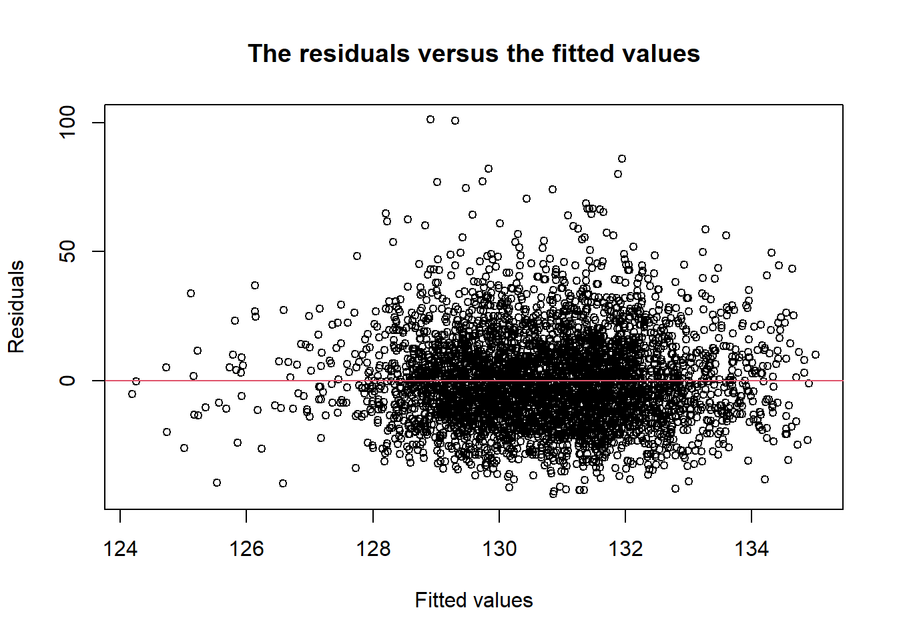
Examine your residuals from the multivariable regression in B1.4. Does this model appear to violate the assumptions of homoscedasticity?
There appears to be a random ball of dots, with no pattern. This is what we want. There does not appear to be heteroscedasticity.
In the last module we looked at linear regression to analyse the effect of different explanatory variables on the SBP of the participants.
We are going to revisit this here and look at it through the lens of the ANOVA.
Let’s look at the association of mean SBP across BMI groups again. But now we want to use the ANOVA post-estimation options to compute multiple comparisons with Fisher’s least-significant difference (LSD) test, which does not adjust the confidence intervals or p-values.
The advantage of this method is that all of the comparisons are shown in one table, so you can inspect any pairing you wish.
We can use the LSD.test() function of the agricolae package to perform this test in R.
model1 <- aov(sbp~bmi_fact, data=whitehall)
summary(model1) Df Sum Sq Mean Sq F value Pr(>F)
bmi_fact 3 6451 2150.4 7.024 0.000104 ***
Residuals 4297 1315528 306.2
---
Signif. codes: 0 '***' 0.001 '**' 0.01 '*' 0.05 '.' 0.1 ' ' 1
26 observations deleted due to missingness# perform Fisher’s LSD
library(agricolae)
print(LSD.test(model1, "bmi_fact")) $statistics
MSerror Df Mean CV
306.1504 4297 130.727 13.3845
$parameters
test p.ajusted name.t ntr alpha
Fisher-LSD none bmi_fact 4 0.05
$means
sbp std r se LCL UCL Min Max Q25 Q50 Q75
1 126.6600 18.47294 50 2.4744714 121.8088 131.5112 86 176 115 125.5 136.75
2 129.5695 17.49645 1791 0.4134468 128.7589 130.3801 87 230 118 128.0 139.00
3 131.3661 17.59025 2084 0.3832821 130.6147 132.1176 88 218 119 130.0 142.00
4 133.2394 16.83856 376 0.9023469 131.4703 135.0084 94 190 122 132.0 143.00
$comparison
NULL
$groups
sbp groups
4 133.2394 a
3 131.3661 a
2 129.5695 b
1 126.6600 b
attr(,"class")
[1] "group"To interpret this output we look at the section headed ‘$groups’. The groups that have different characters listed beside them (i.e. ‘a’ or ‘b’) are significantly different.
Review your output. What do you notice? What can you conclude about the data from these tests? Compare this to your output from the linear regression on the same data.
In this output, we can see that :
To use this method, we must first assign a value for q. Whereas α is the proportion of false positive tests we are willing to accept across the whole sample typically 0.05 (5%), q is the proportion of false positives (false ‘discoveries’) that we are willing to accept within the significant results. In this example we will set q to 0.05 (5%) as well.
Here we are going to apply the Benjamini-Hochberg (BH) method to the data from the Fishers LSD test in the previous practical in Section 22
Firstly, take the P values for each comparison of pairs and put them in ascending numerical order. Then assign a rank number in that order (smallest P value is rank 1, next smallest rank 2 and so on).
| Group A | Group B | P | Rank |
|---|---|---|---|
| Normal | Obese | <0.001 | 1 |
| Normal | Overweight | 0.001 | 2 |
| Underweight | Obese | 0.013 | 3 |
| Overweight | Obese | 0.056 | 4 |
| Underweight | Overweight | 0.060 | 5 |
| Underweight | Normal | 0.246 | 6 |
Calculate the BH critical value for each P value, using the formula q(i/m), where:
i = the individual p-value’s rank,
m = total number of tests,
q= the false discovery rate you have selected (0.05)
| Group A | Group B | P | Rank | BHcrit | Significant |
|---|---|---|---|---|---|
| Normal | Obese | <0.001 | 1 | 0.008 | Yes |
| Normal | Overweight | 0.001 | 2 | 0.016 | Yes |
| Underweight | Obese | 0.013 | 3 | 0.025 | Yes |
| Overweight | Obese | 0.056 | 4 | 0.033 | No |
| Underweight | Overweight | 0.060 | 5 | 0.042 | No |
| Underweight | Normal | 0.246 | 6 | 0.050 | No |
P values which are lower than our BH critical values are considered true ‘discoveries’. The first P value which is higher than the BH critical value and all significant P values below that (below in terms of the table, higher rank numbers) would be considered false ‘discoveries’. P values of ≥0.05 are not treated any differently to normal.
From this we can conclude that all three of our statistically significant differences from out pairwise comparisons are in true ‘discoveries’, and none of them should be discounted.
With small numbers of comparisons like this it is easy to use this method by hand, however where the FDR approach is most useful is when we are making very large numbers (hundreds) of comparisons.
BH(u, alpha = 0.05)where u is a vector containing all of the P values, and alpha is in fact your specified value for q
There are also online FDR calculator you can use like this one https://tools.carbocation.com/FDR
In Practical Section 22, we ran the Fisher’s LSD test to compare systolic blood pressure (SBP) between each possible pairing of groups in the BMI group categorical variable. Now we know a little be more about post hoc tests and correcting for multiple comparisons, we are going to go back and conduct the Bonferroni post hoc and Tukey’s HSD post hoc on the same data.
Tukey’s test in R
The function is ‘TukeyHSD’ (which comes loaded in R already so you do not need to install any packages). You run this function after you fit the ANOVA as you did in Section 22 :
TukeyHSD(model1, conf.level = .95) Tukey multiple comparisons of means
95% family-wise confidence level
Fit: aov(formula = sbp ~ bmi_fact, data = whitehall)
$bmi_fact
diff lwr upr p adj
1-2 -2.909514 -9.3571575 3.538129 0.6523423
3-2 1.796609 0.3476829 3.245534 0.0079012
4-2 3.669847 1.1189404 6.220755 0.0012615
3-1 4.706123 -1.7291986 11.141444 0.2370134
4-1 6.579362 -0.1897670 13.348490 0.0603475
4-3 1.873239 -0.6463616 4.392839 0.2235822Bonferroni test in R
To perform a Bonferroni correction, you run the post estimation function pairwise.t.test(x, g, p.adjust.method =’bonferroni’). Here ‘x’ is your response variable, ‘g’ is the grouping variable, and for p.adjust.method you specify ‘bonferroni’.
pairwise.t.test(whitehall$sbp, whitehall$bmi_grp4, p.adjust.method ='bonferroni')
Pairwise comparisons using t tests with pooled SD
data: whitehall$sbp and whitehall$bmi_grp4
1 2 3
2 1.0000 - -
3 0.3615 0.0087 -
4 0.0752 0.0013 0.3366
P value adjustment method: bonferroni Consider the different post hoc tests and the results for each comparison in them. Is one method producing higher or lower p values than the others? Do any previously significant findings become non-significant after correction for multiple comparisons?
The table below shows the outcome for each of the possible pairs, for each of the three different post hoc tests. These have been ordered from smallest to largest p value for ease of comparison.
| Group A | Group B | P value | P value | P value |
|---|---|---|---|---|
| Fisher’s LSD | Tukey’s HSD | Bonferroni | ||
| Normal | Obese | <0.001* | 0.001* | 0.001* |
| Normal | Overweight | 0.001* | 0.008* | 0.009* |
| Underweight | Obese | 0.013* | 0.060 | 0.075 |
| Overweight | Obese | 0.056 | 0.224 | 0.337 |
| Underweight | Overweight | 0.060 | 0.237 | 0.361 |
| Underweight | Normal | 0.246 | 0.652 | 1.000 |
*= P<0.05- Reject H0
You should notice that the p-vales are lowest for each comparison on the LSD test, and highest in the Bonferroni. Once we apply a correction for multiple comparisons in this way the significant difference in SBP between underweight and obese groups disappears and we fail to reject the null hypothesis for this pairing.
You can download a copy of the slides here: B2.3 Two-way ANOVA
We can also use the ANOVA to further investigate the effect of different categorical explanatory variables on one dependent variable.
To demonstrate this, we are going to use a two-way ANOVA to examine multiple explanatory variables and interactions between them.
To continue our example, we want to examine if there are significant differences in the mean SBP between BMI groups that also smoke (or not).
For a two-way ANOVA the command is the same as in Section 22, but with a second variable:
whitehall$smoked<-factor(whitehall$currsmoker)
model2 <- aov(sbp~bmi_fact+smoked, data=whitehall)
summary(model2) Df Sum Sq Mean Sq F value Pr(>F)
bmi_fact 3 6415 2138.2 6.978 0.000111 ***
smoked 1 190 189.6 0.619 0.431580
Residuals 4291 1314840 306.4
---
Signif. codes: 0 '***' 0.001 '**' 0.01 '*' 0.05 '.' 0.1 ' ' 1
31 observations deleted due to missingnessTo make this a two-way factorial ANOVA (i.e with an interaction between the independent variables), we substitute an ‘*’ for the ‘+’ sign:
model3 <- aov(sbp~bmi_fact*smoked, data=whitehall)
summary(model3) Df Sum Sq Mean Sq F value Pr(>F)
bmi_fact 3 6415 2138.2 6.981 0.000111 ***
smoked 1 190 189.6 0.619 0.431468
bmi_fact:smoked 3 1558 519.2 1.695 0.165772
Residuals 4288 1313282 306.3
---
Signif. codes: 0 '***' 0.001 '**' 0.01 '*' 0.05 '.' 0.1 ' ' 1
31 observations deleted due to missingnessRun the two-way factorial ANOVA and interpret your output. How does this compare to the previous test on these relationships?
Answer B2.3a: Test one, including the interaction term, shows a significant relationship between BMI group and SBP but current smoking and the interaction are non-significant. The interaction is adding the least to the model (has the highest P value).
When we are using interaction terms like this if they do not contribute to the model (i.e. are not significant) we can remove them and see if this makes a difference to the other relationships. Go back and run the test a second time but without the interaction between BMI group and current smoking included. What do you notice?
When we remove the interaction term we see the BMI grouping is still showing a significant relationship on its own, but that current smoker is not. If you go back to practical Section 19 you can compare these results to those from the multivariable linear regression which included these two variables plus LDL-C. You can see that ANOVA without the interaction, is very similar to the linear regression. More on this in section Section 26.0.0.1
Minimal Adequate Model
As current smoker is also non-significant on its own, so you could choose to remove this as well and see what happens to the model. This is a simplified method of model optimisation known as the Minimal Adequate Model, meaning that you remove variables in order from least significant to most significant, until you end up with the simplest model you can. This can be a helpful process if you need to mentally work through your model and understand what each part is contributing. You never want to remove a variable that is significant on its own, or part of a significant interaction, but you can see how removing other non-significant variables can change the overall model. You can do this with any type of General Linear Model.
You can download a copy of the slides here: B2.4 Repeated Measures and the Paired t-test
For this test you need a variable that has been measured twice in the same participants, so open the FoSSA Mouse data set.
Most statistical software (as a default) always assumes that each row is a participant, so if you have paired measurements you need to make sure you have stored them as separate variables, and they are matched up correctly so each participants ‘before’ and ‘after’ for example are on the same row in your data set.
Here we are going to do a paired t-test between the mouse weights at the start and end of the trial.
The paired t test command in R is:
ttest(x, y, paired=TRUE)Here we write:
mouse <- read.csv("FoSSA mouse data(in).csv")t.test(mouse$Weight_baseline, mouse$Weight_end, paired=TRUE)
Paired t-test
data: mouse$Weight_baseline and mouse$Weight_end
t = 0.069672, df = 59, p-value = 0.9447
alternative hypothesis: true mean difference is not equal to 0
95 percent confidence interval:
-0.6468068 0.6934734
sample estimates:
mean difference
0.02333333 Run the test and interpret the output. Is there a significant difference in mouse weight between the beginning and end of the trial?
Our value for t is very small (0.070), which indicates a very small difference between the variables. Looking at the two tailed p-value (which is the default), there is no significant difference in weight between the start and end of the trial (p=0.94). We fail to reject the null hypothesis.
You can download a copy of the slides here: B2.5 Repeated Measures ANOVA.pdf
We can also use the ANOVA structure to test for differences between paired or repeated groups. We are going to use the repeated measures ANOVA to compare the mouse weights taken at the beginning, middle, and end of the trial in the FoSSA Mouse data set.
To do this test, you need to reshape your data so that it is in ‘long’ format, rather than ‘wide’ format (as it currently is). Long format means that all the Weight variables are in one column, with a second column specifying which time they were measured at (beginning, middle or end). We need an ID variable to reshape our data, and we need to make sure the Weight variables have a standardised name with a number at the end.
You will need to install and load the packages tidyverse, dplyr, and rstatix to perform the necessary commands.
To create a subject ID variable, we can use:
library(dplyr)
library(rstatix)mouse$id <- 1:nrow(mouse)We then reshape our data to long format:
mice <- mouse %>%
gather(key = "time", value = "weight", Weight_baseline, Weight_mid, Weight_end) %>%
convert_as_factor(id, time)Then, to run the repeated measures ANOVA, we will load the ez package and use the function ezANOVA. The help file contains lots of useful information about where to put the relevant variables. We must specify the data, our dependant variable (dv=weight), our subject OD (wid=id) and the within subject factor (within=time):
library(ez)
repeat1 <- ezANOVA(data=mice,dv=weight,wid=id,within=time,type=3)
repeat1$ANOVA
Effect DFn DFd F p p<.05 ges
2 time 2 118 0.866249 0.4231827 0.005896862
$`Mauchly's Test for Sphericity`
Effect W p p<.05
2 time 0.7210093 7.590772e-05 *
$`Sphericity Corrections`
Effect GGe p[GG] p[GG]<.05 HFe p[HF] p[HF]<.05
2 time 0.7818665 0.4000192 0.7993554 0.4021355 The top table provides the results of a one-way repeated measures ANOVA if the assumption of sphericity is not violated. You want to look at the row for ‘time’, which shows that the p=0.42. We fail to reject the null hypothesis for a difference in weight across time.
The middle table indicates whether the assumption of sphericity is violated. As p<0.05, we reject the null hypothesis of sphericity, and so will use the sphericity corrections table below.
The bottom table which presents three types of corrections. We can see that the results are consistent and that we do not find evidence to reject the null hypothesis.
Controlling for between-subjects factors
If we want to run this ANOVA again, but control for ‘strain group’, we must first ensure it is a factor. R currently has coded it as an integer value, so we convert to a factor:
mice$Strain_group <- as.factor(mice$Strain_group)We can then add the between subject factor into the ezANOVA command, using the between argument as below:
repeat2 <-ezANOVA(data=mice,dv=weight,wid=id,within=time, between = Strain_group,type=3)
repeat2$ANOVA
Effect DFn DFd F p p<.05 ges
2 Strain_group 2 57 4.334436 1.768830e-02 * 0.091243692
3 time 2 114 1.269825 2.848232e-01 0.007513324
4 Strain_group:time 4 114 14.743714 9.747582e-10 * 0.149509880
$`Mauchly's Test for Sphericity`
Effect W p p<.05
3 time 0.873398 0.02259129 *
4 Strain_group:time 0.873398 0.02259129 *
$`Sphericity Corrections`
Effect GGe p[GG] p[GG]<.05 HFe p[HF]
3 time 0.8876249 2.828744e-01 0.9141235 2.834173e-01
4 Strain_group:time 0.8876249 7.067603e-09 * 0.9141235 4.427869e-09
p[HF]<.05
3
4 *Run the repeated measures ANOVA for difference in weights across the three time points, but this time add ‘Strain Group’ as a ’Between-Subjects Factor. What difference does this make?
When we review values for time:strain group we see that there is now a statistically significant difference, which holds when we correct for the violated sphericity assumption. This means that there is a significant different in weight when corrected for strain group. This is something that requires more investigation, but as these sample sizes are small and we have not considered whether the FoSSA Mouse data set meets all of the assumptions of our general linear model method. We will investigate these relationships in more detail in Module B3.
You can download a copy of the slides here: B3.1 The Parametric Assumptions
Part 1: Normality Testing
The Shapiro-Wilk test statistic \(( W )\) is given by the formula:
\[ W = \frac{\left( \sum_{i=1}^{n} a_i x_{(i)} \right)^2}{\sum_{i=1}^{n} (x_i - \bar{x})^2} \]
Where:
We will need to load the dplyr package for data manipulation, and rstatix for the functions required to perform the tests.
We want to run a Shapiro-Wilk Test to examine Normality by each of the strain groups. We must first create a new dataset grouping by Strain, and then use this as the input for our test. To create the dataset, we will run:
mice_g <- group_by(mouse, Strain)Now, we can test the normality of the three weight variables within each strain group. We specify the dataset, and then the variables we want to test:
shapiro_test(mice_g, Weight_baseline, Weight_mid, Weight_end)# A tibble: 9 × 4
Strain variable statistic p
<chr> <chr> <dbl> <dbl>
1 KO Cdkn1a Weight_baseline 0.919 0.0928
2 KO Cdkn1a Weight_end 0.940 0.236
3 KO Cdkn1a Weight_mid 0.877 0.0154
4 KO N-ras Weight_baseline 0.961 0.555
5 KO N-ras Weight_end 0.897 0.0364
6 KO N-ras Weight_mid 0.971 0.774
7 Wild Weight_baseline 0.915 0.0785
8 Wild Weight_end 0.941 0.253
9 Wild Weight_mid 0.934 0.185 Two of the weight variables are statistically significant different (p<0.05) from a Gaussian or normal distribution (The Cdkn1a KO mice and the mid-point, and the n-RAS KO mice at the end of the trial). This would mean we need to use non-parametric tests when analysing these data.
Part 2: Homogeneity of Variances
In order to test for homogeneity of variance, we must be testing with respect to a factor variable. We wish to test this by strain group, so must convert this variable:
mouse$Strain_group <- as.factor(mouse$Strain_group)Now we can use the levene_test function to test the homogeneity of the variances of baseline weight among the strain groups. We specify the dataset, then the variables in the form dependent variable ~ grouping variable:
levene_test(mouse, Weight_baseline ~ Strain_group, center = mean)# A tibble: 1 × 4
df1 df2 statistic p
<int> <int> <dbl> <dbl>
1 2 57 2.02 0.141Levene’s test statistic \(( F )\) is given by the formula:
\[ F = \frac{(N - k)}{(k - 1)} \cdot \frac{\sum_{i=1}^{k} N_i (Z_{i\cdot} - Z_{\cdot\cdot})^2}{\sum_{i=1}^{k} \sum_{j=1}^{N_i} (Z_{ij} - Z_{i\cdot})^2} \]
Where:
From the output in R, what can you conclude about the variance of the baseline weight?
This tells us that there is no statistically significant difference (p>0.05) in the variance of the mean baseline weight among the strain groups, so the assumption of homogeneity is met.
You can download a copy of the slides here: B3.2 Mann-Whitney U Test
The Mann-Whitney U test is also sometimes called the Wilcoxon Rank-Sum test.
When first examining your data, you may want to check the distribution of the variables of interest and calculate appropriate summary statistics for them.
The Mann-Whitney U statistic for group \(X\) is given by:
\[ U_X = n_X n_Y + \frac{n_X(n_X + 1)}{2} - R_X \]
And for group \(Y\):
\[ U_Y = n_X n_Y + \frac{n_Y(n_Y + 1)}{2} - R_Y \]
Where:
Our ultimate Mann-Whitney U value is always lowest value of our two groups.
\(U_{cal}\) > \(U_{critical}\) : Fail to reject the \(H_o\). No Significant difference
\(U_{cal}\) < \(U_{critical}\) : Reject the \(H_o\). There is Significant difference
The Mann-Whitney U statistic is the smaller of ( U_X ) and ( U_Y ).
We will use the wilcox_test command to perform this. We must specify the data, and the variables to be considered in the form dependent variable ~ grouping variable.
We want to use the Mann-Whitney U Test to determine if there is a significant difference in body condition score between the wild type mice and the Cdkn1a knockout mice at the start of the study (BCS_baseline).
This test can only have two groups so we need to use the comparisons argument in the function so that it specifies the two groups being compared:
wilcox_test(mouse, BCS_baseline ~ Strain, comparisons = list(c("KO Cdkn1a", "Wild")))# A tibble: 1 × 9
.y. group1 group2 n1 n2 statistic p p.adj p.adj.signif
* <chr> <chr> <chr> <int> <int> <dbl> <dbl> <dbl> <chr>
1 BCS_baseline KO Cdkn1a Wild 20 20 160 0.084 0.084 ns There is no significant difference (p>0.05) in body condition score between the wild type mice and the Cdkn1a knockout mice at the baseline.
We can see that there is no significant difference (p>0.05) in body condition score between the wild type mice and the Cdkn1a knockout mice at the baseline.
Is there a significant difference in body condition score between the two different knockout strain rat the end of the trial?
wilcox_test(mouse, BCS_.end ~ Strain, comparisons = list(c("KO Cdkn1a", "KO N-ras")))# A tibble: 1 × 9
.y. group1 group2 n1 n2 statistic p p.adj p.adj.signif
* <chr> <chr> <chr> <int> <int> <dbl> <dbl> <dbl> <chr>
1 BCS_.end KO Cdkn1a KO N-ras 20 20 321 5.42e-4 5.42e-4 *** We can see that the two knockout strains are significantly different (p<0.05) in body condition score at the end of the study.
You can download a copy of the slides here: B3.3 Kruskal-Wallis Test
We can use the kruskal_test command for a comparison between more than two groups. As there is no constraint on the number of groups for the test, we only need to specify the data, followed by the dependent and independent variables in the same was as the previous module Section 28
The Kruskal-Wallis test statistic \(H\) is given by:
\[ H = \frac{12}{N(N+1)} \sum_{i=1}^{k} \frac{R_i^2}{n_i} - 3(N+1) \]
Where:
Explanation:
Is there a significant difference between all three mouse strains on their BCS_baseline score?
kruskal_test(mouse, BCS_baseline ~ Strain)# A tibble: 1 × 6
.y. n statistic df p method
* <chr> <int> <dbl> <int> <dbl> <chr>
1 BCS_baseline 60 7.65 2 0.0218 Kruskal-WallisThese results show that there is a significant difference (p<0.05), reject the null hypothesis \(H_o\) in the baseline body condition score when comparing all three strains.
You can download a copy of the slides here: B3.4 Wilcoxon Signed Rank Test
The Wilcoxon signed-rank test statistic \(T\) is given by:
\[ T= \sum \text{(Ranks of the absolute differences of the non-zero differences)} \]
Where:
For each pair of observations \((X_i, Y_i)\), compute the difference \(D_i = X_i - Y_i\).
Rank the absolute differences \(|D_i|\), ignoring zeros.
Assign positive or negative signs to the ranks based on the sign of \(D_i\).
\(T\) is the sum of the ranks with the appropriate signs.
The alternative z-test for the Wilcoxon signed-rank test is used when the sample size is large (typically \(𝑛> 20\) and the test statistic T is approximately normally distributed.
The Alternative z-statistic for the Wilcoxon signed-rank test is given by:
\[ z = \frac{T - \mu_T}{\sigma_T} \]
Where:
\[ \mu_T = \frac{n(n+1)}{4} \]
\[ \sigma_T = \sqrt{\frac{n(n+1)(2n+1)}{24}} \]
Where \(n\) is the number of non-zero differences between the paired samples. The test evaluates whether the ranks of the positive and negative differences are significantly different, providing evidence of a difference between the paired groups.
We wish to use the Wilcoxon Signed Rank Test to determine if there is a significant difference in body condition score across all mice in the study between the start (BCS_baseline) and end (BCS_end) of the trial.
We use the wilcox.test command to perform this test in R. We specify the two variables, and must use paired=TRUE since the measurements are coming from the same subject:
wilcox.test(mouse$BCS_baseline, mouse$BCS_.end, paired = TRUE, exact = FALSE)
Wilcoxon signed rank test with continuity correction
data: mouse$BCS_baseline and mouse$BCS_.end
V = 203, p-value = 1
alternative hypothesis: true location shift is not equal to 0There is no significant difference (p>0.05) in body condition score of the mice between the start and the end of the study.
Is there a significant difference between weight at the beginning and weight at the end?
wilcox.test(mouse$Weight_baseline, mouse$Weight_end, paired = TRUE, exact = FALSE)
Wilcoxon signed rank test with continuity correction
data: mouse$Weight_baseline and mouse$Weight_end
V = 896.5, p-value = 0.9338
alternative hypothesis: true location shift is not equal to 0From this, we can conclude that there is no significant difference (p>0.05) in the weight of the mice between the start and the end of the study.
You can download a copy of the slides here: B3.5 Friedman Test
The Friedman test statistic \(Q\) is given by:
\[ Q = \frac{12}{nk(k+1)} \sum_{j=1}^{k} R_j^2 - 3n(k+1) \]
Where:
The test assesses whether there are differences between the treatments or conditions across subjects by comparing rank sums.
We want to examine if there is a significant difference in body condition score among the three measures taken during the study for all mice.
As with the repeated measures ANOVA, before we begin using the Friedman test, we must convert our data into long form. We will do this in a similar manner to before, first by creating a subject id variable, and then reshaping the data:
mouse$id <- 1:nrow(mouse)
mice1 <- mouse %>%
gather(key = "time", value = "BCS", BCS_baseline, BCS_mid, BCS_.end) %>%
convert_as_factor(id, time)We can now use the friendman.test function – it requires three inputs: the data, the comparison you are doing, and the blocking factor (subject id) and takes the form:
friendman.test(data = name, dependent variable ~ independent variable | id)In this case, we will use:
friedman.test(data=mice1, BCS ~ time | id)
Friedman rank sum test
data: BCS and time and id
Friedman chi-squared = 1.7045, df = 2, p-value = 0.4264The body condition score did not significantly (p>0.05) differ between the time points of measurement when consider all the mice.
Next, we may want to consider the different strains individually. Create a subset containing the N-ras knockout mice only:
mice2 <- mouse[mouse$Strain=="KO N-ras",]The Friedman test must have all of the id variables in ascending order from 1 to n, so we must remake the id variable in the same manner as before, namely:
mice2$id <- 1:nrow(mice2)We then reshape our data into long form again. Note that this is exactly the same code as above aside from changing the dataset names, so can be run very quickly.
mice.bcs2 <- mice2 %>%
gather(key = "time", value = "BCS", BCS_baseline, BCS_mid, BCS_.end) %>%
convert_as_factor(id, time)We are now able to run the Friedman test on this subset of our data.
friedman.test(data=mice.bcs2, BCS ~ time | id)
Friedman rank sum test
data: BCS and time and id
Friedman chi-squared = 14.105, df = 2, p-value = 0.0008651We can see there is a significant difference (p<0.05) in the body condition score of the N-ras knockout mice between the time points of measurement.
You can download a copy of the slides here: B3.6 Spearman’s Rank Order Correlation
The Spearman rank correlation coefficient \(\rho\) is given by:
\[ \rho = 1 - \frac{6 \sum d_i^2}{n(n^2 - 1)} \]
Where:
This formula is used to measure the strength and direction of association between two ranked variables.
To test the significance of the Spearman rank correlation coefficient \(\rho\), the t-statistic can be calculated as:
\[ t = \frac{\rho \sqrt{n - 2}}{\sqrt{1 - \rho^2}} \]
Where:
The t-statistic follows a t-distribution with \(n - 2\) degrees of freedom, allowing you to test whether the Spearman correlation is significantly different from zero.
For the last practical in this module, you are going to perform a test of correlation on non-parametric data using the Spearman’s Rank Order Correlation.
This can be conducted using the cor.test command, which has the structure:
cor.test(data$variable 1, data$variable 2, method="spearman")We can specify spearman as the method to conduct a Spearman’s rank test. If the method is not specified, the default is Pearson’s correlation.
What is the spearman correlation between Weight_end and BCS_end?
cor.test(mouse$Weight_end, mouse$BCS_.end, method = "spearman")
Spearman's rank correlation rho
data: mouse$Weight_end and mouse$BCS_.end
S = 6700.1, p-value = 2.695e-15
alternative hypothesis: true rho is not equal to 0
sample estimates:
rho
0.813835 We can see that there is a significant (p<0.05) correlation between the body condition score and the weight of the mice at the end of the study and their correlation coefficient is 0.81.
You can download a copy of the slides here: C1.1 Introduction to Prevalence, Risk, Odds and Rates
Risk describes the probability with which an outcome will occur in at risk population.
Proportion of new cases of an outcome in an at-risk population
The formula for risk in epidemiology is given by:
\[ \text{risk (p)} = \frac{\text{Number of new outcomes (e.g., cases of disease)}}{\text{Total population at risk during a specific time period}} \]
Risk of CVD in the Oxford Study
1000 participants in the Oxford Study
400 develop CVD
Risk of CVD in the Oxford Study:
\[ \text{risk (p)} = \frac{\text{Number of cases CVD}}{\text{Number in Oxford Study}} = \frac{400}{1000} = 0.40 \text{ or } 40\% \]
The risk of CVD in the Oxford Study is 40%
The formula for odds in epidemiology is given by:
\[ \text{Odds} = \frac{\text{Number of events}}{\text{Number of non-events}} = \frac{\text{Number of Outcome}}{\text{Number of No outcome}} \]
\(\text{ OR }\)
\[ \frac{\text{Outcome} / \text{Total}}{\text{No Outcome} / \text{Total}} = \frac{\text{Risk (Probability of outcome)}}{\text{1 - Risk (Probability of no outcome)}} \]
Or, if you have the probability \(p\) of an event, you can express odds in terms of \(p\) as:
Alternatively, if \(p\) represents the probability of the outcome, the odds can be expressed as:
\[ \text{Odds} = \frac{p}{1 - p} \]
Odds of CVD in the Oxford Study
\[ \text{Odds} = \frac{p}{1 - p} = \frac{0.40}{1 - 0.40} = \frac{0.40}{0.60} = 0.667 \text{ or } 67\% \]
The odds of having CVD is 67%
\[ \text{Rate} = \frac{\text{Number of events}}{\text{Person-time at risk}} \]
Rate of CVD in the Oxford Study
\[ \text{rate} = \frac{\text{Number of cases of CVD}}{\text{Person - time at risk}} = \frac{400}{137052} = .0029 \]
\[ \text{rate} = (0.0029)*1000 = 2.9 \]
The rate of CVD in the Oxford Study is 2.9 per 1000 person years
Calculate the overall risk of death by using a combination of table() and prop.table() commands:
table(df$death)
prop.table(table(df$death))Examine the pattern of risk of death in relation to increasing age. The margins option in the prop.table() command needs to be set to “2” because we want to report the proportions per group. For example, for age and death, this command would be:
table(df$age_grp, df$death)
prop.table(table(df$age_grp, df$death), margins=2)What does your table suggest about the risk of death overall?
table(whitehall$death)
0 1
2801 1526 prop.table(table(whitehall$death))
0 1
0.6473307 0.3526693 For this cohort the overall risk of death is 1526/(2801+1526) = 0.3527 or 35.3% over the years of follow up.
What does your table suggest about the risk death across levels of age?
table(whitehall$age_grp, whitehall$death)
0 1
1 713 137
2 1296 507
3 607 470
4 185 412prop.table(table(whitehall$age_grp, whitehall$death), 2)
0 1
1 0.25455195 0.08977720
2 0.46269190 0.33224115
3 0.21670832 0.30799476
4 0.06604784 0.26998689The risk of death appears to increase as age increases.
The epitools R package
A good R package to calculate basic epidemiologic analysis is the epitools R package, which includes commands for the design of two-way and multi-way contingency tables and epidemiologic measures, such as risk ratios and odds ratios. You can find more details on the commands included in the epitools R package here.
Install and load the epitools R package with the following commands:
install.packages("epitools")
library(epitools)The epitab() command
A good command in R to explore risk and odds ratios is the epitab() command from the epitools R package. This command is used to produce epidemiological tables with point estimates and CI for risk ratios, and odds ratios.
The syntax for the command is: epitab(x, y, method)
where x is the vector of the exposure, y is the vector of the outcome and method can be either “oddsratio” to calculate an odds ratio or “riskratio” to calculate a risk ratio. This command works with either binary or categorical exposures. For categorical exposures, R uses by default the lowest value of the exposure as the reference category.
Using the epitab() command to calculate a risk ratio
We want to obtain the risk ratio of mortality for individuals that are current smokers compared to non-smokers. We type the command:
epitab(x = whitehall$currsmoker, y = whitehall$death, method = "riskratio")Use the help file for the epitab() command to find out how to obtain an odds ratio.
What is the risk ratio and 95% CI of death for individuals that are current smokers compared with individuals that are non-smokers?
library(epitools)
result1 <- epitab(x = whitehall$currsmoker, y = whitehall$death, method = "riskratio")
print(result1)$tab
Outcome
Predictor 0 p0 1 p1 riskratio lower upper p.value
0 2473 0.6549258 1303 0.3450742 1.000000 NA NA NA
1 327 0.6000000 218 0.4000000 1.159171 1.036537 1.296314 0.01263365
$measure
[1] "wald"
$conf.level
[1] 0.95
$pvalue
[1] "fisher.exact"The risk ratio for death is 1.16 times higher for current smokers compared to non-smokers. The 95% confidence interval around the risk ratio is 1.04-1.30.
What is the odds ratio for death in individuals that are current smokers vs non-smokers? State and interpret the 95% confidence interval.
library(epitools)
result2 <- epitab(x = whitehall$currsmoker, y = whitehall$death, method = "oddsratio")
print(result2)$tab
Outcome
Predictor 0 p0 1 p1 oddsratio lower upper p.value
0 2473 0.8832143 1303 0.8566732 1.000000 NA NA NA
1 327 0.1167857 218 0.1433268 1.265285 1.052595 1.520953 0.01263365
$measure
[1] "wald"
$conf.level
[1] 0.95
$pvalue
[1] "fisher.exact"The odds ratio for death in current smokers compared to non-smokers is 1.27 with a 95% confidence interval of 1.05-1.52. Or, you could say: “The odds of death in current smokers are 1.27 times those of non-smokers.”
The 95% CI states that there is a 95% chance that the interval containing the true population odds ratio lies between 1.05-1.52. Since this interval does not cross 1, it indicates that there are significantly higher odds death for smokers compared to non-smokers.
The ‘ir’ command for rates
Now let’s have a look at the rate ratio for death in smokers vs non-smokers. This will require the ‘rateratio’ method in the epitab() command.
Type the following command to produce the rate and rate ratio:
death_no_smokers <- sum(whitehall$death[whitehall$currsmoker=="0"], na.rm=TRUE)
death_no_smokers [1] 1303death_smokers <- sum(whitehall$death[whitehall$currsmoker=="1"], na.rm=TRUE)
death_smokers [1] 218fup_no_smoker <- sum(whitehall$fu_years[whitehall$currsmoker=="0"], na.rm=T)
fup_no_smoker[1] 25796.28fup_smoker <- sum(whitehall$fu_years[whitehall$currsmoker=="1"], na.rm=T)
fup_smoker[1] 3645.13library(epitools)
result3 <- epitab(x=c(death_no_smokers, death_smokers), y= c(fup_no_smoker, fup_smoker), method = c("rateratio"))
print(result3)$tab
Outcome
Predictor c(death_no_smokers, death_smokers) c(fup_no_smoker, fup_smoker)
Exposed1 1303 25796.28
Exposed2 218 3645.13
Outcome
Predictor rateratio lower upper p.value
Exposed1 1.000000 NA NA NA
Exposed2 1.184012 1.025815 1.366605 0.02320371
$measure
[1] "wald"
$conf.level
[1] 0.95
$pvalue
[1] "midp.exact"The rate ratio of death in current vs non-smokers is 1.18. This means the rate of death in current smokers is 1.18 times that of non-smokers. Alternatively, you could say the rate of death in smokers was 18% higher than in non-smokers. The 95% CI is 1.02-1.37. This CI does not cross the null value so we know the rate of death in current smokers is significantly higher than that of non-smokers.
You can download a copy of the slides here: C1.2 The Chi-Square Test and the Test For Trend
| Disease | No Disease | Total | ||
|---|---|---|---|---|
| Exposure Status | Exposed | a | b | a+b |
| Exposure Status | Unexposed | c | d | c+d |
| Total | a+c | b+d | N |
| DEATH | DEATH | |||
|---|---|---|---|---|
| Yes | No | Total | ||
| BMI | ≥25 kg/m2 | 916 (0.21) | 816 (0.19) | 1732 |
| BMI | <25 kg/m2 | 589 (0.14) | 1945 (0.46) | 2534 |
| Total | 1505 | 2761 | 4266 |
Ho: the proportion \(\pi\) of death is the same in each group
Ho: \(\pi_{{BMI} \geq 25kg/m2} - \pi_{{BMI} < 25kg/m2}\)
Ha: the proportion \(\pi\) of death is different
Ha: \(\pi_{{BMI} \geq 25kg/m2} \neq \pi_{{BMI} < 25kg/m2}\)
| DEATH | DEATH | |||
|---|---|---|---|---|
| Yes | No | Total | ||
| BMI | ≥25 kg/m2 | 916 (a) | 816 (b) | 1732 (a+b) |
| BMI | <25 kg/m2 | 589 (c) | 1945 (d) | 2534 (c+d) |
| Total | 1505 (a+c) | 2761 (b+d) | 4266 (a+b+c+d) |
The expected frequency for each cell in a 2x2 contingency table is given by:
\[ E_{ij} = \frac{\text{Row Total}_i \times \text{Column Total}_j}{\text{Grand Total}} \]
where:
| DEATH | DEATH | |||
|---|---|---|---|---|
| Yes | No | Total | ||
| BMI | ≥25 kg/m2 | \(\frac{(a+b)(a+c)}{a+b+c+d}\) | \(\frac{(a+b)(b+d)}{a+b+c+d}\) | a+b |
| BMI | <25 kg/m2 | \(\frac{(c+d)(a+c)}{a+b+c+d}\) | \(\frac{(c+d)(b+d)}{a+b+c+d}\) | c+d |
| Total | a+c | b+d | a+b+c+d |
| DEATH | DEATH | |||
|---|---|---|---|---|
| Yes | No | Total | ||
| BMI | ≥25 kg/m2 | 916 (611) | 816 (1211) | 1732 |
| BMI | <25 kg/m2 | 589 (894) | 1945 (1640) | 2534 |
| Total | 1505 | 2761 | 4266 |
The chi-squared test statistic is calculated as:
\[ \chi^2 = \sum \frac{(O_i - E_i)^2}{E_i} \]
where:
The chi-squared (\(\chi^2\)) calculation is as follows:
\[ \chi^2 = \frac{(1945 - 1640)^2}{1640} + \frac{(589 - 894)^2}{894} + \frac{(816 - 1121)^2}{1121} + \frac{(916 - 611)^2}{611} \]
\[ \chi^2 = 395.93 \]
\[ df = (r-1)(c-1) \]
where:
\[ df = (2-1)(2-1) = 1 \]
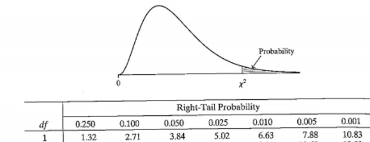
We want to look at the association of age group with fatal CVD. In order to obtain a chi-square test for association, we use the chisq.test() command, and the code looks like this: chisq.test(df$age_grp, df$cvd_death, correct=FALSE)
Is there an association between age group and fatal CVD? Just looking at a cross-tabulation table without doing any additional steps, are you able to tell which age groups are different from each other?
chisq.test(whitehall$age_grp, whitehall$cvd_death, correct=FALSE)
Pearson's Chi-squared test
data: whitehall$age_grp and whitehall$cvd_death
X-squared = 221.7, df = 3, p-value < 2.2e-16The chi-square test statistic is shown below the table and is X2 = 221.6 on 3 df (chi2(3)) which gives a p-value of Pr <2.2E-16.
The p value of the chi-square test is highly significant (p<0.001), suggesting that we can reject the null hypothesis that there is no difference in true fatal CVD prevalence across different age groups. While we can observe in the row percentages that fatal CVD prevalence is the highest at older ages, and lowest at younger ages, the chi-square test is a global test so it just tells us there is a difference somewhere in the table; it does not tell us which groups are different nor does it tell us about the nature of the association (e.g if it is positive or negative).
| DEATH | DEATH | |||
|---|---|---|---|---|
| Yes | No | Total | ||
| BMI Categories | <18.5 kg/m2 | 169 (0.11) | 822 (0.30) | 991 |
| BMI Categories | 18.5-<25 kg/m2 | 190 (0.13) | 601(0.22) | 791 |
| BMI Categories | 25-<30 Kg/m2 | 230 (0.15) | 522 (0.19) | 752 |
| BMI Categories | ≥30 kg/m2 | 916 (0.61) | 816 (0.3) | 1732 |
| Total | 1505 | 2761 | 4266 |
If we take a look at the proportions in the table, it would appears that there is a trend where those with higher BMI have a greater risk of death than those a lower BMI.
And we can see here that it seems that those with the highest level of BMI have 61% risk of death. However, this is just an observation, and we would need to use some statistical test to determine if this observation is true.
The chi-square test for linear trend (Cochran-Armitage) is used to test for trend in proportions
Typically used between a binary variable and an ordinal variable with k categories
Ho: there is no trend in the proportion of death across BMI categories
Ha: There. is trend in the proportion of death across BMI categories
The chi-square test for linear trend (also called the Cochran-Armitage test for linear trend) is obtained using the prop.trend.test() command. The setup of this command is: prop.trend.test(x, n)
where:
death_BMI4cat <- c(169, 190, 230, 916)
total_BMI4cat <- c(991, 791, 752, 1732)
prop.trend.test( x=death_BMI4cat, n=total_BMI4cat)
Chi-squared Test for Trend in Proportions
data: death_BMI4cat out of total_BMI4cat ,
using scores: 1 2 3 4
X-squared = 400.8, df = 1, p-value < 2.2e-16We can reject the null hypothesis that there is no linear trend in the proportion of death across the BMI categories
If, we plot a line graph that depicts the relationship of risk of death against Categories of BMI, it will showed that those at the lower levels of BMI have about 15% risk of death as compare to 60% for those in the highest levels of BMI.
Obtain the prevalence of prior diabetes in the different groups of BMI. What happens to diabetes prevalence as the BMI group increases?
whitehall$bmi_grp41 <- factor(whitehall$bmi_grp4, levels=c(1,2,3,4), labels=c("Underweight", "Normal", "Overweight", "Obese"))
prop.table(table(whitehall$bmi_grp41, whitehall$prior_t2dm), 1)
0 1
Underweight 0.92000000 0.08000000
Normal 0.94924707 0.05075293
Overweight 0.93830703 0.06169297
Obese 0.91223404 0.08776596The prevalence of diabetes increases from 8% (underweight) to 5% (normal weight) to 8.8% in the group with obesity.
Perform a chi-square test of linear trend. What is the null hypothesis and what do the results of this test suggest?
table(whitehall$bmi_grp41, whitehall$prior_t2dm)
0 1
Underweight 46 4
Normal 1702 91
Overweight 1962 129
Obese 343 33t2dm_bmig <- c(4, 91, 129, 33)
table(whitehall$bmi_grp41)
Underweight Normal Overweight Obese
50 1793 2091 376 total_bmig <- c(50, 1793, 2091, 376)
prop.trend.test(x = t2dm_bmig , n = total_bmig)
Chi-squared Test for Trend in Proportions
data: t2dm_bmig out of total_bmig ,
using scores: 1 2 3 4
X-squared = 5.8129, df = 1, p-value = 0.01591The chi-square test for linear trend is obtained using the prop.trend.test() command. The chi-square value (for 1 degree of freedom) is 5.8 and the p-value=0.02. There is evidence of a significant linear trend, and we can reject the null hypothesis that there is no association between diabetes status and BMI group.
You can download a copy of the slides here: C1.3a Univariable Logistic Regression
The scatterplot (Figure 2) describe linear relationship using the following formula: \(y = \alpha + \beta x\).
Linear relationship between SBP and BMI: \(\text{SBP} = \alpha + \beta\text{BMI}\). \(\text{SBP} = 119.1 + 0.46\text{ BMI }\) : Means SBP of 119.1 mmHg when the BMI is 0 and the \(\beta\) coefficient for BMI as per 1 unit increase in BMI, SBP increases by 0.46 mmHg.
4 possible values in the scatterplot Figure 4 between SBP (1 ≥ 120 mmHg and 0 < 120 mmHg) and BMI (1 ≥ 25 kg/m2 and 0 if < 25 kg/m2). So a 2x2 table may be more appropriate.| SBP | SBP | ||
|---|---|---|---|
| <120 mmHg | ≥120 mmHg | ||
| BMI | <25 kg/m2 | 543 (0.30) | 1277 (0.70) |
| BMI | ≥25 kg/m2 | 613 (0.25) | 1833 (0.75) |
Proportion of the outcome in exposed and unexposed but constrained to 0 to 1, which posed problematic.
Odds of the outcome in exposed and unexposed but constrained from 0 to \(\infty\), which is also problematic.
Log odds of the outcome in exposed and unexposed are unconstrained, also spanned from \(-\infty\) to \(\infty\). Best to use rather than above methods.
\(\text{log(odds)} = \alpha + \beta\text{x}\)
y = log odd of disease
\(\alpha\) = true intercept (value of y when x = 0)
\(\beta\) = true slope (the increase in log odds per unit increase in x)
Smoking (Binary exposure): 1= current and 0 = never
Death (Binary outcome): 1= died and 0 = alive
\(\text{log(odds of death)} = \alpha + \beta\text{smoking }\)
\(\text{log of disease in the never smokers (unexposed)} = \alpha + \beta(0) = \alpha\)
\(\text{log of disease in the current smokers (exposed)} = \alpha + \beta(1) = \alpha + \beta\)
Refer back to Table 2, Figure 1 and Section 33.2.1.1.
This time, we are interested in quantifying the strength of association between BMI and the risk of death, as well as the directional effect.
To run a logistic regression in R, we use the glm() command. The set up of the command is: glm(formula, family, data)
where:
outcome ~ exposure,binomial(link = “logit”) for logistic regression, andTo use this command, you need to confirm that your outcome variable is coded as a factor variable. You can find more details on glm() command in this help file.
Using the glm() command above, the log OR (Estimate) and its standard error (Std. Error) are printed, and we estimate the OR and the 95% confidence intervals by exponentiating the results with this post-estimation command: exp(cbind(coef(model), confint(model)))
# Create a DataFrame representing the table
df <- data.frame(
BMI = c("≥25 kg/m2", "<25 kg/m2", "Total"),
DEATH_Yes = c("916 (611)", "589 (894)", "1505"),
DEATH_No = c("816 (1211)", "1945 (1640)", "2761"),
Total = c("1732", "2534", "4266")
)
print(df) BMI DEATH_Yes DEATH_No Total
1 ≥25 kg/m2 916 (611) 816 (1211) 1732
2 <25 kg/m2 589 (894) 1945 (1640) 2534
3 Total 1505 2761 4266To run logistic regression on this dataset, you’ll first need to transform it into a format suitable for analysis. The current dataset contains counts in the form of text (e.g., “916 (611)”) and includes a “Total” row that should be excluded. We need to clean this data, extract the numeric values, and set up a binary variable for logistic regression.
df <- data.frame(
BMI = c("≥25 kg/m2", "<25 kg/m2"),
DEATH_Yes = c("916", "589"),
DEATH_No = c("816", "1945")
)
# Convert the count columns to numeric
df$DEATH_Yes <- as.numeric(df$DEATH_Yes)
df$DEATH_No <- as.numeric(df$DEATH_No)
# Reshape the data to a long format
df_long <- data.frame(
BMI = rep(df$BMI, times = 2),
Death = c(rep(1, nrow(df)), rep(0, nrow(df))),
Count = c(df$DEATH_Yes, df$DEATH_No)
)
# Run logistic regression
model4 <- glm(Death ~ BMI, data = df_long, family = binomial, weights = Count)
# Display the summary of the model
summary(model4)
Call:
glm(formula = Death ~ BMI, family = binomial, data = df_long,
weights = Count)
Coefficients:
Estimate Std. Error z value Pr(>|z|)
(Intercept) -1.19459 0.04703 -25.40 <2e-16 ***
BMI≥25 kg/m2 1.31019 0.06730 19.47 <2e-16 ***
---
Signif. codes: 0 '***' 0.001 '**' 0.01 '*' 0.05 '.' 0.1 ' ' 1
(Dispersion parameter for binomial family taken to be 1)
Null deviance: 5538.6 on 3 degrees of freedom
Residual deviance: 5143.2 on 2 degrees of freedom
AIC: 5147.2
Number of Fisher Scoring iterations: 5The intercept can be explained as the risk of death or the log risk of death in those with BMI of less than 25 kg/m^2 and the BMI coefficient, we can estimate that as the log odds ratio of death for those with a BMI of \(\geq\).
The Second column showed the standard error for the test.
The third and fourth column show the Z statistic for the wald test of the parameter estimates and their corresponding p-values.
The Z statistic in this model tests the null hypothesis that the true parameter or coefficient equals 0.
In this test, the null hypothesis is that the \(\beta\) for BMI is 0. However, given the Z statistic for wald test for BMI and the p-value for BMI, we can sufficiently reject the null hypothesis and conclude that the estimates for BMI is significantly different from 1, given that the p-value is 2e-16.
However, the results given for R for the logistic regression are given on the log scale, which are terribly meaningful.
Hence, we have to take the exponent of those estimates to get the odds ratio for BMI.
exp(cbind(coef(model4), confint(model4))) 2.5 % 97.5 %
(Intercept) 0.3028278 0.2759467 0.3318232
BMI≥25 kg/m2 3.7068894 3.2501146 4.2313672The odds of death in those with BMI of < 25 kg/m^2 is 30%. The odds of dying is 3.71 times higher in those with a BMI of \(\geq\) 25 kg/m2 vs a BMI of < 25 kg/m2.
Dichotomise the variable ‘sbp’ into below 140 mmHg and greater than or equal to 140 mmHg. Call this variable “hyperten” to indicate “hypertensive”. Use logistic regression to examine the association of hypertensive on your odds of having prior CVD (‘prior_cvd’). Interpret the output
To dichotomise the “sbp” variable, use the following command:
# Assign 0 to "hyperten" where sbp < 140 and sbp is not NA
whitehall[!is.na(whitehall$sbp) & whitehall$sbp < 140, "hyperten"] <- 0
# Assign 1 to "hyperten" where sbp >= 140 and sbp is not NA
whitehall[!is.na(whitehall$sbp) & whitehall$sbp >= 140, "hyperten"] <- 1To run the logistic regression we use the glm() command:
model <- glm(prior_cvd ~ hyperten, family = binomial(link = "logit"), data = whitehall)
summary(model)
Call:
glm(formula = prior_cvd ~ hyperten, family = binomial(link = "logit"),
data = whitehall)
Coefficients:
Estimate Std. Error z value Pr(>|z|)
(Intercept) -1.23835 0.04265 -29.033 < 2e-16 ***
hyperten 0.46809 0.07612 6.149 7.78e-10 ***
---
Signif. codes: 0 '***' 0.001 '**' 0.01 '*' 0.05 '.' 0.1 ' ' 1
(Dispersion parameter for binomial family taken to be 1)
Null deviance: 4850.8 on 4317 degrees of freedom
Residual deviance: 4813.9 on 4316 degrees of freedom
(9 observations deleted due to missingness)
AIC: 4817.9
Number of Fisher Scoring iterations: 4The lnOR (Estimate) and its standard error (Std. Error) are printed, and we estimate the OR and the 95% confidence intervals by exponentiating:
exp(cbind(coef(model), confint(model))) 2.5 % 97.5 %
(Intercept) 0.289861 0.2664396 0.3149364
hyperten 1.596948 1.3749602 1.8531421The odds of having prior CVD are 1.60 times greater for someone that was hypertensive compared to those who were not (95% CI: 1.38-1.86). This effect is significant (p<0.001), which means that we can reject the null hypothesis that there is no association between hypertension and prior CVD, and that the odds ratio is equal to 1.
You can download a copy of the slides here: C1.3b Univariable Logistic Regression
We may use the glm() command to obtain odds ratios for a categorical variable such as BMI group. By default, the category with the lowest numerical value is treated as reference category.
Are categories of BMI (categorical exposure) associated with the risk of death (outcome) ?
Refer back to the table Table 3 used for test for linear trend section Section 33.3
df1 <- data.frame(
BMI = c("<18.5 kg/m2", "18.5-<25 kg/m2", "25-<30 kg/m2", "≥30 kg/m2"),
Death_Yes = c(169, 190, 230, 916),
Death_No = c(822, 601, 522, 816)
)
# Reshape to long format for logistic regression
df_long1 <- data.frame(
BMI = rep(df1$BMI, times = 2),
Death = c(rep(1, nrow(df1)), rep(0, nrow(df1))),
Count = c(df1$Death_Yes, df1$Death_No)
)
df_long1$BMI_ordinal <- as.numeric(df_long1$BMI)
# Logistic regression model
model5 <- glm(Death ~ BMI, data = df_long1, family = binomial, weights = Count)
# Display the model summary
summary(model5)
Call:
glm(formula = Death ~ BMI, family = binomial, data = df_long1,
weights = Count)
Coefficients:
Estimate Std. Error z value Pr(>|z|)
(Intercept) -1.58184 0.08446 -18.729 < 2e-16 ***
BMI≥30 kg/m2 1.69744 0.09722 17.461 < 2e-16 ***
BMI18.5-<25 kg/m2 0.43027 0.11858 3.629 0.000285 ***
BMI25-<30 kg/m2 0.76225 0.11575 6.586 4.53e-11 ***
---
Signif. codes: 0 '***' 0.001 '**' 0.01 '*' 0.05 '.' 0.1 ' ' 1
(Dispersion parameter for binomial family taken to be 1)
Null deviance: 5538.6 on 7 degrees of freedom
Residual deviance: 5098.8 on 4 degrees of freedom
AIC: 5106.8
Number of Fisher Scoring iterations: 5Unlike the previous example, where we fit BMI as a binary variable. We have 3 variables in the model that relate to BMI. So these BMI variables are known as INDICATOR variables, and they are coded as 0 and 1. And each of these variables are comparing the log odds ratio of death to the reference group of BMI, which is the BMI < 18.5 kg/m2.
The intercept is the log odds of death in the unexposed group, so that would be the log odds of death in those with BMI category of 0, which is the reference group for the 4 levels variable of BMI.
The next code will help analyze the results in a form of odds ratio rather than log odds ratio for better interpretation:
exp(cbind(coef(model5), confint(model5))) 2.5 % 97.5 %
(Intercept) 0.2055961 0.1736859 0.2419055
BMI≥30 kg/m2 5.4599722 4.5227171 6.6218289
BMI18.5-<25 kg/m2 1.5376739 1.2191087 1.9410068
BMI25-<30 kg/m2 2.1431000 1.7094246 2.6915133HOW DO WE INTERPRET THESE ODDS RATIO ?
For instance, those with a BMI of 25-<30 kg/m2, they have a 2.14 times higher odds of death than those with a BMI of < 18.5 kg/m2. Those with the BMI of \(\geq\) 30 kg/m2 have a 5.5 times higher odds of death than those with a BMI of < 18.5 kg/m2.
model6 <- glm(prior_cvd ~ bmi_grp41, family = binomial(link = "logit"), data = whitehall)
summary(model6)
Call:
glm(formula = prior_cvd ~ bmi_grp41, family = binomial(link = "logit"),
data = whitehall)
Coefficients:
Estimate Std. Error z value Pr(>|z|)
(Intercept) -1.2657 0.3414 -3.707 0.000209 ***
bmi_grp41Normal 0.1059 0.3459 0.306 0.759502
bmi_grp41Overweight 0.1880 0.3451 0.545 0.585906
bmi_grp41Obese 0.3307 0.3601 0.918 0.358485
---
Signif. codes: 0 '***' 0.001 '**' 0.01 '*' 0.05 '.' 0.1 ' ' 1
(Dispersion parameter for binomial family taken to be 1)
Null deviance: 4844.0 on 4309 degrees of freedom
Residual deviance: 4840.4 on 4306 degrees of freedom
(17 observations deleted due to missingness)
AIC: 4848.4
Number of Fisher Scoring iterations: 4Odd ratios in a logistic regression with a categorical variable are interpreted as the odds of the outcome in the specified level compared with a baseline level. The constant refers to the odds of the outcome in the baseline category. We estimate the OR and the 95% confidence intervals by exponentiating:
exp(cbind(coef(model6), confint(model6))) 2.5 % 97.5 %
(Intercept) 0.2820513 0.1375174 0.5315899
bmi_grp41Normal 1.1116883 0.5841438 2.2973726
bmi_grp41Overweight 1.2068182 0.6352198 2.4906452
bmi_grp41Obese 1.3919192 0.7090235 2.9467805Here, the odds of having prior CVD are 36% higher if a participant has obesity compared to if they have a normal weight (OR:1.39, 95% CI:0.71-2.95). This association is not statistically significant (p=0.40) so we cannot reject the null hypothesis that the OR of obese vs normal weight is 1.
We can use the logistic command to obtain an odds ratio and a linear trend test for an ordered categorical variable such as BMI group. For this reason, we should tell R that our exposure variable is to be treated as a continuous variable rather than as a categorical variable. We achieve that using the as.numeric() command in the formula.
Are higher levels of BMI (ordered categorical exposure) associated with the risk of death (outcome) ?
Refer back to the table Table 3 used for test for linear trend section Section 33.3
This is similar to the linear trend test Section 33.3, we want to assess whether there is a linear association between BMI categories with the risk of death. We will be using logistic regression model.
\[ \text{log odds}=\alpha+\beta\text{BMI4cat} \]
\(\beta\text{BMI4cat}\) = log OR per unit increase in BMI categories.
A unit increase is given by: < 18.5 (1, ref) vs 18.5-<25 kg/m2 (2), or 18.5-<25(2) vs 25-<30 kg/m2 (3), or 25-<30 (3) vs >= 30 kg/m2 (4)
We can perform logistic regression treating our categorical BMI variable as continuous.
df1 <- data.frame(
BMI = c("<18.5 kg/m2", "18.5-<25 kg/m2", "25-<30 kg/m2", "≥30 kg/m2"),
Death_Yes = c(169, 190, 230, 916),
Death_No = c(822, 601, 522, 816)
)
# Reshape to long format for logistic regression
df_long1 <- data.frame(
BMI = rep(df1$BMI, times = 2),
Death = c(rep(1, nrow(df1)), rep(0, nrow(df1))),
Count = c(df1$Death_Yes, df1$Death_No)
)
# Convert BMI to an ordered factor and then to numeric for ordinal regression
df_long1$BMI <- factor(df_long1$BMI, levels = c("<18.5 kg/m2", "18.5-<25 kg/m2", "25-<30 kg/m2", "≥30 kg/m2"), ordered = TRUE)
df_long1$BMI_ordinal <- as.numeric(df_long1$BMI)
# Logistic regression model
model7 <- glm(Death ~ BMI_ordinal, data = df_long1, family = binomial(link = "logit"), weights = Count)
# Summary of the model
summary(model7)
Call:
glm(formula = Death ~ BMI_ordinal, family = binomial(link = "logit"),
data = df_long1, weights = Count)
Coefficients:
Estimate Std. Error z value Pr(>|z|)
(Intercept) -2.29855 0.09785 -23.49 <2e-16 ***
BMI_ordinal 0.58505 0.03028 19.32 <2e-16 ***
---
Signif. codes: 0 '***' 0.001 '**' 0.01 '*' 0.05 '.' 0.1 ' ' 1
(Dispersion parameter for binomial family taken to be 1)
Null deviance: 5538.6 on 7 degrees of freedom
Residual deviance: 5116.2 on 6 degrees of freedom
AIC: 5120.2
Number of Fisher Scoring iterations: 5We can see that per 1 unit increase across the categorical variables, the log OR is 0.59.
We need to convert the log OR to odds ratio.
exp(cbind(coef(model7), confint(model7))) 2.5 % 97.5 %
(Intercept) 0.100404 0.0826956 0.121369
BMI_ordinal 1.795078 1.6923953 1.905716How do we interpret an OR of 1.80 for BMI?
OR=1.80 for 18.5-<25 versus < 18.5 kg/m2 OR=1.80 for 25-<30 versus 18.5-<25 kg/m2 OR=1.80 for >= 30 versus 25-<30 kg/m2
It can be interpreted as Per one unit increase in BMI categories, the OR for death is 1.80.
After obtaining our odds ratio, we wants to determine whether BMI as an ordinal variable is significant or not.
The wald test null hypothesis is equivalent to the chi-squared test for linear trend.
The wald test null hypothesis is that there is no association between BMI categories ion death (i.e linear trend OR=1). In our alternative hypothesis, it states that there is an increasing or decreasing linear trend.
In the test, we can see that our Z-value or our wald test is 19.32 and we have p-value of 2e-16, so we have sufficient evidence the null hypothesis and we can interpret these values as there is a statistically significant increasing trend in the log odds of death with linear trend odds ratio of 1.8 and that is significantly different to 1.
model8 <- glm(prior_cvd ~ as.numeric(bmi_grp41), family = binomial(link = "logit"), data = whitehall)
summary(model8)
Call:
glm(formula = prior_cvd ~ as.numeric(bmi_grp41), family = binomial(link = "logit"),
data = whitehall)
Coefficients:
Estimate Std. Error z value Pr(>|z|)
(Intercept) -1.36810 0.14779 -9.257 <2e-16 ***
as.numeric(bmi_grp41) 0.10066 0.05377 1.872 0.0612 .
---
Signif. codes: 0 '***' 0.001 '**' 0.01 '*' 0.05 '.' 0.1 ' ' 1
(Dispersion parameter for binomial family taken to be 1)
Null deviance: 4844.0 on 4309 degrees of freedom
Residual deviance: 4840.5 on 4308 degrees of freedom
(17 observations deleted due to missingness)
AIC: 4844.5
Number of Fisher Scoring iterations: 4Note that the Wald test here is equivalent to the chi-square test for linear trend Section 33.3. The null hypothesis is that there is no association between BMI group and prior CVD (i.e. that the linear trend OR equals 1), and the alternative hypothesis is that there is a linear increasing or decreasing trend. Here, the p-value (p=0.07) indicates that there is not evidence against the null hypothesis (although this is a borderline significant p-value) and we conclude that there is not a statistically significant increasing trend in log odds of prior CVD across groups of BMI.
Use logistic regression to obtain odds ratios for the association of BMI group on prior diabetes. Try fitting this variable both as a categorical variable and as a linear trend.
whitehall$bmi_grp41 <- relevel(whitehall$bmi_grp41, ref = "Normal")
model9 <- glm(prior_t2dm ~ bmi_grp41, family = binomial(link = "logit"), data = whitehall)
summary(model9)
Call:
glm(formula = prior_t2dm ~ bmi_grp41, family = binomial(link = "logit"),
data = whitehall)
Coefficients:
Estimate Std. Error z value Pr(>|z|)
(Intercept) -2.9287 0.1076 -27.221 < 2e-16 ***
bmi_grp41Underweight 0.4864 0.5323 0.914 0.36086
bmi_grp41Overweight 0.2068 0.1408 1.468 0.14204
bmi_grp41Obese 0.5875 0.2116 2.776 0.00551 **
---
Signif. codes: 0 '***' 0.001 '**' 0.01 '*' 0.05 '.' 0.1 ' ' 1
(Dispersion parameter for binomial family taken to be 1)
Null deviance: 1947.6 on 4309 degrees of freedom
Residual deviance: 1939.8 on 4306 degrees of freedom
(17 observations deleted due to missingness)
AIC: 1947.8
Number of Fisher Scoring iterations: 5Just to note that the reference group in the model is those with a normal weight. We can estimate the different ORs and their corresponding the 95% confidence intervals from the model by taking the exponential:
exp(cbind(coef(model9), confint(model9))) 2.5 % 97.5 %
(Intercept) 0.05346651 0.04300229 0.0655958
bmi_grp41Underweight 1.62637362 0.48271514 4.1110344
bmi_grp41Overweight 1.22972745 0.93456038 1.6244822
bmi_grp41Obese 1.79944253 1.17348811 2.6973518The odds ratio of prior diabetes for underweight vs normal weight (as BMI group 2 is the reference group) is 1.63 (95% CI: 0.50-4.11). The z-statistic for this odds ratio is 0.91 and p=0.360 so this odds ratio is not significantly different to 1.
The odds ratio for overweight vs normal weight is 1.23 (95% CI: 0.93-1.62). The z-statistic for this odds ratio is 1.47 and p=0.142 so this odds ratio is not significantly different to 1.
Finally, the odds ratio for obese vs normal weight is 1.80 (95% CI: 1.17-2.70). The z-statistic for this odds ratio is 2.78 and p=0.006 so this odds ratio is significantly different to 1.
To fit a logistic regression with a continuous exposure, we type the variable as it is (with no prefix) and we interpret the OR in terms of a 1-unit change in the exposure:
model10 <- glm(prior_cvd ~ hdlc, family = binomial(link = "logit"), data = whitehall)
summary(model10)
Call:
glm(formula = prior_cvd ~ hdlc, family = binomial(link = "logit"),
data = whitehall)
Coefficients:
Estimate Std. Error z value Pr(>|z|)
(Intercept) -0.3329 0.1102 -3.019 0.00253 **
hdlc -0.7183 0.1002 -7.170 7.49e-13 ***
---
Signif. codes: 0 '***' 0.001 '**' 0.01 '*' 0.05 '.' 0.1 ' ' 1
(Dispersion parameter for binomial family taken to be 1)
Null deviance: 4837.2 on 4301 degrees of freedom
Residual deviance: 4783.2 on 4300 degrees of freedom
(25 observations deleted due to missingness)
AIC: 4787.2
Number of Fisher Scoring iterations: 4We estimate the OR and the 95% confidence intervals by exponentiating:
exp(cbind(coef(model10), confint(model10))) 2.5 % 97.5 %
(Intercept) 0.7168523 0.5776495 0.8899956
hdlc 0.4875979 0.4000832 0.5925440The odds of having prior CVD were 51% lower for each 1 unit increase in HDL-C (OR: 0.49, 95%CI: 0.40-0.59). This association was statistically significant.
Use logistic regression to assess the association between ‘prior_t2dm’ and the continuous exposure variable ‘hdlc’. How would you interpret this output?
model11 <- glm(prior_t2dm ~ hdlc, family = binomial(link = "logit"), data = whitehall)
summary(model11)
Call:
glm(formula = prior_t2dm ~ hdlc, family = binomial(link = "logit"),
data = whitehall)
Coefficients:
Estimate Std. Error z value Pr(>|z|)
(Intercept) -1.9509 0.1986 -9.824 < 2e-16 ***
hdlc -0.7691 0.1871 -4.112 3.92e-05 ***
---
Signif. codes: 0 '***' 0.001 '**' 0.01 '*' 0.05 '.' 0.1 ' ' 1
(Dispersion parameter for binomial family taken to be 1)
Null deviance: 1946.7 on 4301 degrees of freedom
Residual deviance: 1928.7 on 4300 degrees of freedom
(25 observations deleted due to missingness)
AIC: 1932.7
Number of Fisher Scoring iterations: 5exp(cbind(coef(model11), confint(model11))) 2.5 % 97.5 %
(Intercept) 0.1421395 0.09611743 0.2093818
hdlc 0.4634117 0.31952668 0.6653126For every 1 unit increase in HDL-C, the odds of having prior diabetes were 54% lower (OR: 0.46 95% CI: 0.32-0.67). This association is statistically significant (p<0.001) so we can reject the null hypothesis that there is no association of HDL-C with prior diabetes.
You can download a copy of the slides here: C1.4 Multivariable Logistic Regression
Is alcohol consumption associated with the risk of heart disease?
| Heart Disease | Heart Disease | |||
|---|---|---|---|---|
| No | Yes | Total | ||
| Alcohol Use | No | 815 | 83 | 898 |
| Alcohol Use | Yes | 1664 | 328 | 1972 |
| Total | 2479 | 411 | 2870 |
# Define the raw counts in a data frame
df_counts <- data.frame(
Alcohol_Use = c("No", "No", "Yes", "Yes"),
Heart_Disease = c("No", "Yes", "No", "Yes"),
Count = c(815, 83, 1664, 328)
)
# Expand the data frame by repeating rows according to the count
df_expanded <- df_counts[rep(1:nrow(df_counts), df_counts$Count), c("Alcohol_Use", "Heart_Disease")]
# Convert to a table format
table_df <- table(df_expanded$Alcohol_Use, df_expanded$Heart_Disease)
# Perform Chi-squared test
chisq.test(df_expanded$Alcohol_Use, df_expanded$Heart_Disease,
correct=F)
Pearson's Chi-squared test
data: df_expanded$Alcohol_Use and df_expanded$Heart_Disease
X-squared = 26.472, df = 1, p-value = 2.673e-07From the chi-squared test there is a significant association between the two variables. Although, the chi-squared test indicated that there is a difference between alcohol consumption and heart disease. We need to quantify this estimates. So first, we can run a logistic regression test and you can see this output at the top of this fight
# Convert the variables to factors for logistic regression
df_expanded$Alcohol_Use <- factor(df_expanded$Alcohol_Use, levels = c("No", "Yes"))
df_expanded$Heart_Disease <- factor(df_expanded$Heart_Disease, levels = c("No", "Yes"))
# Run the logistic regression model
m1 <- glm(Heart_Disease ~ Alcohol_Use, data = df_expanded, family = binomial)
# Display the summary of the model
summary(m1)
Call:
glm(formula = Heart_Disease ~ Alcohol_Use, family = binomial,
data = df_expanded)
Coefficients:
Estimate Std. Error z value Pr(>|z|)
(Intercept) -2.2843 0.1152 -19.830 < 2e-16 ***
Alcohol_UseYes 0.6604 0.1301 5.077 3.84e-07 ***
---
Signif. codes: 0 '***' 0.001 '**' 0.01 '*' 0.05 '.' 0.1 ' ' 1
(Dispersion parameter for binomial family taken to be 1)
Null deviance: 2363.8 on 2889 degrees of freedom
Residual deviance: 2335.5 on 2888 degrees of freedom
AIC: 2339.5
Number of Fisher Scoring iterations: 4So overall, we can see from the results of this logistic regression that alcohol is significantly associated with heart disease. However, this estimates are on a log scale. So let us take the exponent so we can get the odds ratio
exp(cbind(coef(m1), confint(m1))) 2.5 % 97.5 %
(Intercept) 0.1018405 0.08066848 0.1267961
Alcohol_UseYes 1.9355304 1.50712997 2.5112532We can see that the odds of the heart disease is nearly twice as high (OR = 1.94, 95% CI: 1.51-2.51) in those who consume alcohol versus those who do not consume alcohol
ARE THERE POSSIBLE EXPLANATIONS FOR THIS FINDINGS ?
Chance - the z test value of 5.17 gives p<0.001, so chance is very unlikely.
Bias - e.g. reporting bias if people with heart disease are more likely to remember risk behaviours.
Confounding – that this association is wholly/partly due to another risk factor for heart disease. People who consume alcohol may also be more likely to smoke.
The association between alcohol use and heart disease is real
A Confounder is a variable that distorts the apparent magnitude of the relationship between an exposure and an outcome.
For a variable to be a confounder, it needs to be:
Smoking is a potential confounder of this association if it is:
To determine if smoking is a risk factor for heart disease, we can perform a logistic regression test to determine if it’s associated with heart disease.
# Create a data frame with counts for smoking and heart disease
df4 <- data.frame(
smoke = c("No", "No", "Yes", "Yes"),
heart_disease = c("No", "Yes", "No", "Yes"),
count = c(1488, 83, 1664, 328) # These values may need adjusting based on trial and error
)
# Expand the data frame to use it for logistic regression
df_exp <- df4[rep(1:nrow(df4), df4$count), c("smoke", "heart_disease")]
# Convert 'smoke' and 'heart_disease' to factors
df_exp$smoke <- factor(df_exp$smoke, levels = c("No", "Yes"))
df_exp$heart_disease <- factor(df_exp$heart_disease, levels = c("No", "Yes"))
# Run logistic regression
m2 <- glm(heart_disease ~ smoke, data = df_exp, family = binomial)
# Display the summary of the model
summary(m2)
Call:
glm(formula = heart_disease ~ smoke, family = binomial, data = df_exp)
Coefficients:
Estimate Std. Error z value Pr(>|z|)
(Intercept) -2.8863 0.1128 -25.593 <2e-16 ***
smokeYes 1.2624 0.1279 9.867 <2e-16 ***
---
Signif. codes: 0 '***' 0.001 '**' 0.01 '*' 0.05 '.' 0.1 ' ' 1
(Dispersion parameter for binomial family taken to be 1)
Null deviance: 2548.0 on 3562 degrees of freedom
Residual deviance: 2431.8 on 3561 degrees of freedom
AIC: 2435.8
Number of Fisher Scoring iterations: 5We can see from the logistic regression output that smoking is significantly associated with the risk of heart disease, chi-squared test can also be used
Next, we want to see whether smoking is associated with alcohol consumption and this can be achieved by creating 2 x 2 table and perfoming a chi-squared test.
| Smoking | Smoking | |||
|---|---|---|---|---|
| No | Yes | Total | ||
| Alcohol Use | No | 650 | 83 | 898 |
| Alcohol Use | Yes | 838 | 1134 | 1972 |
| Total | 1488 | 1382 | 2870 |
# Define the raw counts in a data frame
df5 <- data.frame(
Alcohol_Use = c("No", "No", "Yes", "Yes"),
Smoking = c("No", "Yes", "No", "Yes"),
Count = c(650, 248, 838, 1134)
)
# Expand the data frame by repeating rows according to the count
df_exp2 <- df5[rep(1:nrow(df5), df5$Count), c("Alcohol_Use", "Smoking")]
# Convert to a table format
table_df2 <- table(df_exp2$Alcohol_Use, df_exp2$Smoking)
# Perform Chi-squared test
chisq.test(df_exp2$Alcohol_Use, df_exp2$Smoking,
correct=F)
Pearson's Chi-squared test
data: df_exp2$Alcohol_Use and df_exp2$Smoking
X-squared = 220.78, df = 1, p-value < 2.2e-16We can see that the results of the chi-squared test indicate that smoking is significantly associated with alcohol use. As earlier discussed, we determined that smoking was a risk factor for heart disease and it was associated with alcohol use
So since these assumptions have been meet, then, smoking is a potential confounder
In order to control for confounding, we have to use multivariable logistic regression
Logistic regression models can be extended to include >1 explanatory variable.
By including 2+ explanatory variables in the same model, we are fitting a model in which each explanatory variable is controlled for the other
We may fit multivariable models which include:
# Create a data frame with counts for alcohol use, smoking, and heart disease
df6 <- data.frame(
alcohol = c("No", "No", "No", "No", "Yes", "Yes", "Yes", "Yes"),
smoke = c("No", "No", "Yes", "Yes", "No", "No", "Yes", "Yes"),
heart_disease = c("No", "Yes", "No", "Yes", "No", "Yes", "No", "Yes"),
count = c(1250, 100, 1250, 300, 900, 150, 1100, 300) # Adjusted counts to fit approximate output
)
# Expand the data frame by repeating rows according to the count
df_exp3 <- df6[rep(1:nrow(df6), df6$count), c("alcohol", "smoke", "heart_disease")]
# Convert 'alcohol', 'smoke', and 'heart_disease' to factors
df_exp3$alcohol <- factor(df_exp3$alcohol, levels = c("No", "Yes"))
df_exp3$smoke <- factor(df_exp3$smoke, levels = c("No", "Yes"))
df_exp3$heart_disease <- factor(df_exp3$heart_disease, levels = c("No", "Yes"))
# Run logistic regression
m3 <- glm(heart_disease ~ alcohol + smoke, data = df_exp3, family = binomial)
# Display the summary of the model
summary(m3)
Call:
glm(formula = heart_disease ~ alcohol + smoke, family = binomial,
data = df_exp3)
Coefficients:
Estimate Std. Error z value Pr(>|z|)
(Intercept) -2.30155 0.07686 -29.943 < 2e-16 ***
alcoholYes 0.31951 0.07567 4.222 2.42e-05 ***
smokeYes 0.77712 0.08111 9.581 < 2e-16 ***
---
Signif. codes: 0 '***' 0.001 '**' 0.01 '*' 0.05 '.' 0.1 ' ' 1
(Dispersion parameter for binomial family taken to be 1)
Null deviance: 4684.5 on 5349 degrees of freedom
Residual deviance: 4565.9 on 5347 degrees of freedom
AIC: 4571.9
Number of Fisher Scoring iterations: 4exp(cbind(coef(m3), confint(m3))) 2.5 % 97.5 %
(Intercept) 0.1001038 0.08590003 0.1161161
alcoholYes 1.3764537 1.18684762 1.5968212
smokeYes 2.1752056 1.85774881 2.5534494After taking the exponents of the \(\beta\) coefficients from our logistic regression model, we can see that the odds ratio for alcohol use is about 1.40. This odds ratio is much smaller than the crude or unadjusted odds ratio (1.94) we had before we add smoking to the model
So we can interpret this odds ratio for alcohol use after adjusting for smoking, the effect of alcohol use on heart disease is similar with an adjusted odds ratio of about 1.40 in the 95% CI: 1.19 - 1.60. And this is statistically significant
Now use the glm() command to obtain the odds ratio for prior CVD with hypertension, adjusted for HDL-C. This may be obtained as follows: model <- glm(prior_cvd ~ hypertens + hdlc, family = binomial(link = "logit"), data = df)
Note that the output gives us the odds ratio for ‘hyperten’ adjusted for ‘hdlc’ but it also gives us the odds ratios for ‘hdlc’ adjusted for ‘hyperten’.
What are the odds of having prior CVD if a participant is hypertensive, once you have adjusted for their levels of HDL-C?
m4 <- glm(prior_cvd ~ hyperten + hdlc, family = binomial(link = "logit"), data = whitehall)
summary(m4)
Call:
glm(formula = prior_cvd ~ hyperten + hdlc, family = binomial(link = "logit"),
data = whitehall)
Coefficients:
Estimate Std. Error z value Pr(>|z|)
(Intercept) -0.48531 0.11411 -4.253 2.11e-05 ***
hyperten 0.43917 0.07681 5.718 1.08e-08 ***
hdlc -0.69387 0.10040 -6.911 4.81e-12 ***
---
Signif. codes: 0 '***' 0.001 '**' 0.01 '*' 0.05 '.' 0.1 ' ' 1
(Dispersion parameter for binomial family taken to be 1)
Null deviance: 4829.9 on 4292 degrees of freedom
Residual deviance: 4743.3 on 4290 degrees of freedom
(34 observations deleted due to missingness)
AIC: 4749.3
Number of Fisher Scoring iterations: 4exp(cbind(coef(m4), confint(m4))) 2.5 % 97.5 %
(Intercept) 0.6155070 0.4921809 0.7698921
hyperten 1.5514152 1.3339486 1.8026973
hdlc 0.4996366 0.4097819 0.6074451Here, the odds ratio for prior CVD is 1.55 times higher in those with hypertension compared to those without hypertension, after adjusting for HDL-C (OR: 1.55, 95% CI: 1.33-1.80).
Survival data are time-to-event:
Special features are time and censoring
Summarized by the survival function (and hazard function)
Measured in person-time, the sum of observation time contributed by all individuals in the study [\(=(\frac{\text{time/origin}}{scale})\)]
Subjects censored at some time t are ignored at all future times.
Loss to follow-up may be informative, e.g if subjects are too ill to continue study - this may be problematic.
Informative censoring usually problematic - carefully check distribution of censoring times.
experience the outcome event - “failure”experience the outcome event - “survival”not be observed - “censoring”Examples:
Two functions are very important in survival analysis, and these are the Survival function and Hazard function
Survival function:s(t)
Where: T is the time to event, t = time of event
Hazard function (hazard rate):The hazard function, denoted as \(h(t)\), represents the instantaneous risk of an event occurring after time \(t\), given that the individual is event-free up to time \(t\). In other word, What is the probability that the event will happen between \(T\) and the next fraction of time. The formula is:
\[ h(t) = \lim_{\Delta t \to 0} \frac{P(t \leq T < t + \Delta t \mid T \geq t)}{\Delta t} \]
where:
Alternatively, the hazard function can also be expressed in terms of the probability density function \(f(t)\) and the survival function \(S(t)\) as:
\[ h(t) = \frac{f(t)}{S(t)} \]
where:
In contrast to the survival function, which focuses on not having an event, the hazard function focuses on the event occurring.
Risk(proportion) or odds of events at the end of follow-up
Average time-to-event:
The Survival function can overcome these limitations
The command Surv is used to create a survival object, which sets up a time to event data structure. When we have only one time period, like in this study, we specify in the form Surv(follow up time, event indicator).
Since we want to look at the event of “death”, and we have followed participants for several years, the following command is used:
library(survival), surv_object <- Surv(whitehall$fu_years, whitehall$death)
The output from R is a matrix with two columns – the first is the survival time, and the second an indicator for death or not.
How many events occurred during the follow up period?
# Calculate the number of death events during the follow-up period
number_of_deaths <- sum(whitehall$death)
number_of_deaths[1] 15261,526 deaths
The \(\text{estimated survival function}\) is
The Kaplan-Meier estimator, denoted as \(\hat{S}(t)\), estimates the survival function as:
\[ \hat{S}(t) = \prod_{t_j \leq t} \left(P_{j}\right) \]
where:
The estimated survival function is constant between events, so the graph is a step function
Recall Figure 5, we have different characteristic of this participants. Some of them died, some of them were lost to follow up, some of them had the event of interest (MI).
Let us compute kaplan-meier estimate of the survival function
To produce a Kaplan-Meier (K-M) Survival Curve for all-cause mortality, we will use the survminer R package which aims to plot time-to-event data using the ggplot R package.
The command ggsurvplot() from the survminer R package produces a plot of the K-M survivor function. There are a variety of options that you could use that might make a graph more informative. You can find more details about the survminer R package in this website.
To produce a Kaplan-Meier curve for the total population we run the following command: model <- survfit(Surv(fu_years, death) ~ 1, data = df)
To get the risk table at prespecified times, we used the summary() command with the times option: summary(model, times)
Use the survfit() and summary() commands and the times option seq(0.5, 9, 0.5) to see what time since re-survey corresponds to 75% survival.
library(survminer)
library(survival)
m5 <- survfit(Surv(fu_years, death) ~ 1, data = whitehall)
summary(m5, times = seq(0.5, 9, 0.5))Call: survfit(formula = Surv(fu_years, death) ~ 1, data = whitehall)
time n.risk n.event survival std.err lower 95% CI upper 95% CI
0.5 4285 41 0.991 0.00147 0.988 0.993
1.0 4216 69 0.975 0.00239 0.970 0.979
1.5 4138 78 0.957 0.00310 0.950 0.963
2.0 4043 95 0.935 0.00376 0.927 0.942
2.5 3955 88 0.914 0.00426 0.906 0.923
3.0 3865 89 0.894 0.00469 0.885 0.903
3.5 3765 100 0.871 0.00510 0.861 0.881
4.0 3667 97 0.848 0.00546 0.837 0.859
4.5 3571 96 0.826 0.00577 0.815 0.837
5.0 3473 97 0.803 0.00604 0.792 0.815
5.5 3372 100 0.780 0.00630 0.768 0.793
6.0 3242 129 0.750 0.00658 0.738 0.763
6.5 3136 106 0.726 0.00678 0.713 0.739
7.0 3020 114 0.700 0.00697 0.686 0.713
7.5 2890 125 0.671 0.00715 0.657 0.685
8.0 1458 48 0.656 0.00732 0.641 0.670
8.5 1404 54 0.631 0.00776 0.616 0.64775% survival occurs at around 6 years, and this agrees with report from stsum below.
Use the ggsurvplot() command to plot the cumulative survival, and use the appropriate option to estimate how many participants were at risk going into the 8th year of follow-up.
ggsurvplot(m5, risk.table = T)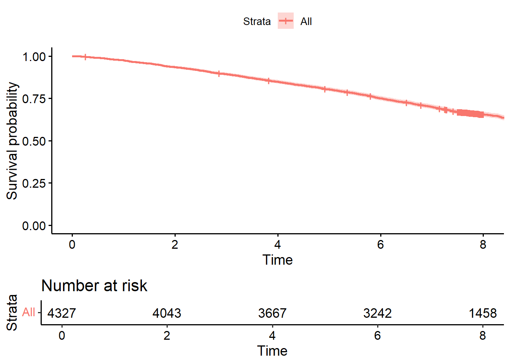
The graph shows that 1458 participants were at risk going into the 8th year of follow-up.
\[ \hat{S}(t) = \frac{\text{initial number of individuals - number of event up to t}}{\text{initial number of individuals in the study}} \]
\[ \text{Var}(\hat{S}(t)) = \frac{\hat{S}(t)[1 - \hat{S}(t)]}{n} \]
The variance of the Kaplan-Meier survival estimate with censoring, using Greenwood’s formula, is:
\[ \text{Var}(\hat{S}(t)) = \hat{S}(t)^2 \sum_{i: t_i \leq t} \frac{d_i}{n_i (n_i - d_i)} \]
where:
The approximate \(100(1 - \alpha)\%\) confidence interval for the Kaplan-Meier survival estimate \(\hat{S}(t)\), using the variance, is given by:
\[ \left( \hat{S}(t) - z \cdot \sqrt{\text{Var}(\hat{S}(t))}, \hat{S}(t) + z \cdot \sqrt{\text{Var}(\hat{S}(t))} \right) \]
where:
This formula provides a confidence interval around the survival estimate by directly using the variance, giving an interval centered on \(\hat{S}(t)\) with width determined by the variance.
For a Kaplan-Meier survival estimate \(\hat{S}(t)\), the approximate \(100(1 - \alpha)\%\) confidence interval is:
\[ \left( \hat{S}(t)^{\exp\left(-z \cdot \text{SE}(\log(-\log(\hat{S}(t))))\right)}, \hat{S}(t)^{\exp\left(z \cdot \text{SE}(\log(-\log(\hat{S}(t))))\right)} \right) \]
where:
This formula gives a confidence interval for the survival probability at each time point, accounting for the variability in the estimate.
This formula provides an estimate of the variance in survival probability at each observed time point.
In the case of two groups the formula is:
\[ \sum_{k=1}^2\frac{\left( \sum_{j=1}^{t} O_{jk} - \sum_{j=1}^{t} E_{jk}\right)^2}{\sum_{j=1}^{t} V_j} - \chi_{1}^2 \]
| \(k=1\) | \(K=2\) | Total | ||
|---|---|---|---|---|
| Event at t | Yes | \(d_{t1}\) | \(d_{t2}\) | \(d_t\) |
| Event at t | No | \(n_{t1}-d_{t1}\) | \(n_{t2}-d_{t2}\) | \(n_{t}-d_{t}\) |
| Total | \(n_{t1}\) | \(n_{t2}\) | \(n_t\) |
Where:
There will be need to calculates the expected events \(E_{t1}\) for group 1, \(E_{t2}\) for group 2 and variance (\(V_t\))
\[ E_{t1} = \frac{n_{t1}d_t}{n_t}, E_{t2}= \frac{n_{t2}d_t}{n_t} \text{ and}, V_t = \frac{n_{t1}n_{t2}d_t(n_t-d_t)}{(n_t)^2(n_t-1)} \]
The above formula is use to calculate expected event and variance in case of Chi-square test
First, we will divide the variable vitd at the median (nb: there are several methods you can use to code this correctly in R). We will show a recoding approach based on tidyverse R package. We can use a combination of the mutate() command and case_when() command as follows: df <- df %>% mutate(vitd_med = case_when(vitd <= summary(df$vitd)[3] ~ 0, vitd > summary(df$vitd)[3] ~ 1))
We use the summary() command to estimate the descriptive statistics (i.e., minimum value, 1st quartile, median, mean, 3rd quartile, and maximum value) of the vitd variable. The 3rd element in the output of the summary()command is the median which is used to dichotomise the vitd variable.
The survdiff() command compares the survival distrubutions of an exposure variable by performing a log-rank test. The syntax of the survdiff() command is the following: survdiff(Surv(time, event) ~ variable, data)
The survdiff() command uses as a dependent variable a survival object which is produced by the Surv() command. To create a survival object, we should define the follow up time (time) and the outcome status (event) in the Surv() command.
Using the survdiff() command, compare the survival distributions for the two categories of VitD. Is there a significant difference in the survival of participants below and above the median of vitamin D concentration?
library(tidyverse)
library(survminer)
library(survival)
# Calculate the median of `vitd` once and store it in a variable
vitd_median <- median(whitehall$vitd, na.rm = TRUE)
# Use the median in your mutate statement
whitehall <- whitehall %>%
mutate(vitd_med = case_when(
vitd <= vitd_median ~ 0,
vitd > vitd_median ~ 1
))
survdiff(Surv(fu_years, death) ~ vitd_med, data = whitehall)Call:
survdiff(formula = Surv(fu_years, death) ~ vitd_med, data = whitehall)
N Observed Expected (O-E)^2/E (O-E)^2/V
vitd_med=0 2183 940 727 62.7 120
vitd_med=1 2144 586 799 57.0 120
Chisq= 120 on 1 degrees of freedom, p= <2e-16 The log-rank test indicates that we can reject the null hypothesis that the survival distributions for the two categories are the same, as the chi(1)=120 , p<2e-16. There is a statistically significant difference in survival for participants above and below the median of vitamin D concentrations. Looking at the KM plot of the survival functions, we can see that participants with vitamin D above the median tend to survive longer.
\[ h(t | X) = h_0(t) \exp(\beta_1 X_1 + \beta_2 X_2 + \dots + \beta_p X_p) \]
where:
This model assumes that the effect of covariates on the hazard is multiplicative and proportional over time.
Alternative writing:
\[ \log(\frac{h(t | X)}{h_0(t)})= \beta_1 X_1 + \beta_2 X_2 + \dots + \beta_p X_p \]
where:
This equation shows that the covariates \(X\) have a linear effect on the log of the hazard function, a key assumption in the Cox model.
Semi-parametric model because there are no assumptions about the shape of the baseline hazard function and because there is a Non-Parametric part, i.e, the one with log and parametric part that is given by the exponential part of the coefficient.Suppose now we have estimated our coefficients intermodal, so we want to see how we can interpret this coefficient \(\beta_1 \text{ to } \beta_p\).
\[ \text{Proportional hazards assumption:} \frac{h(t)_{exposed}}{h(t)_{unexposed}} \text{ is constant over time.} \]
The coxph() command is used to run a Cox proportional hazards regression model in R. The simplified syntax of the coxph() command is the following: coxph(formula, data)
The formula used in the coxph() command needs a survival object as dependent variable which is created using the Surv() command. The syntax of the Surv() command is the following: Surv(time, event)
where time is the follow-up time per individual and event is the disease/outcome status per individual.
For example, we can examine the effect of frailty on the risk of death. Frailty is measured using a quantitative scale and it would be better to treat it as a categorical variable:
library(survminer)
library(survival)
whitehall$frailty <- as.factor(whitehall$frailty)
m6 <- coxph(Surv(fu_years, death) ~ frailty, data = whitehall)
summary(m6)Call:
coxph(formula = Surv(fu_years, death) ~ frailty, data = whitehall)
n= 4327, number of events= 1526
coef exp(coef) se(coef) z Pr(>|z|)
frailty2 0.37490 1.45484 0.10467 3.582 0.000341 ***
frailty3 0.66515 1.94478 0.10039 6.626 3.45e-11 ***
frailty4 1.05922 2.88412 0.09164 11.558 < 2e-16 ***
frailty5 1.74762 5.74090 0.08719 20.044 < 2e-16 ***
---
Signif. codes: 0 '***' 0.001 '**' 0.01 '*' 0.05 '.' 0.1 ' ' 1
exp(coef) exp(-coef) lower .95 upper .95
frailty2 1.455 0.6874 1.185 1.786
frailty3 1.945 0.5142 1.597 2.368
frailty4 2.884 0.3467 2.410 3.452
frailty5 5.741 0.1742 4.839 6.811
Concordance= 0.671 (se = 0.007 )
Likelihood ratio test= 577.2 on 4 df, p=<2e-16
Wald test = 576.4 on 4 df, p=<2e-16
Score (logrank) test = 667.9 on 4 df, p=<2e-16Looking at the output, you can see that the hazard of dying is nearly 6 times greater for participants in frailty level 5 compared with frailty level 1 (HR 5.7, 95% CI:4.8-6.8). This is statistically significant.
What is association of vitamin D (using the variable coded above and below the median) with the risk (hazard) of dying?
library(survminer)
library(survival)
whitehall$vitd_med <- as.factor(whitehall$vitd_med)
m7 <- coxph(Surv(fu_years, death) ~ vitd_med, data = whitehall)
summary(m7)Call:
coxph(formula = Surv(fu_years, death) ~ vitd_med, data = whitehall)
n= 4327, number of events= 1526
coef exp(coef) se(coef) z Pr(>|z|)
vitd_med1 -0.56864 0.56630 0.05266 -10.8 <2e-16 ***
---
Signif. codes: 0 '***' 0.001 '**' 0.01 '*' 0.05 '.' 0.1 ' ' 1
exp(coef) exp(-coef) lower .95 upper .95
vitd_med1 0.5663 1.766 0.5108 0.6279
Concordance= 0.57 (se = 0.006 )
Likelihood ratio test= 120.3 on 1 df, p=<2e-16
Wald test = 116.6 on 1 df, p=<2e-16
Score (logrank) test = 119.8 on 1 df, p=<2e-16Participants that have vitamin D concentrations above the median have a 43% lower hazard (or risk) of dying, and this is statistically significant (HR 0.57, 95% CI: 0.51-0.63).
Two solutions:
or
There are many similarities between Cox regression and linear and logistic regression. We have seen that you can adjust for additional variables in the same way. You can also fit interactions using the same commands. However, the one key difference between a Cox regression and other regression models is the proportional hazards assumption.
The proportional hazards assumption states that hazard ratio (comparing levels of an exposure variable) is constant over time. This assumption needs to be tested. The lecture explained 3 ways to do this: fitting an interaction with time, examining the residuals with a log-log plot and testing the residuals for a correlation with time. In practice, generally just choosing one method to use is sufficient.
If the PH assumption is violated, it means that the hazard ratio is not constant over time, i.e. there is an interaction between a covariate and time. Thus, we can fit a Cox model with a time interaction in it and see if this is significant. We can also use a likelihood ratio (LR) test to see if a model with a time-varying covariate fits better than one without. In R, the interaction of a covariate with time can be fitted by using the time-transform functionality tt() in the coxph() command.
library(survminer)
library(survival)
whitehall$age_grp <- as.factor(whitehall$age_grp)
m8 <- coxph(formula = Surv(fu_years, death) ~ frailty + age_grp + tt(age_grp), data = whitehall)
summary(m8)Call:
coxph(formula = Surv(fu_years, death) ~ frailty + age_grp + tt(age_grp),
data = whitehall)
n= 4327, number of events= 1526
coef exp(coef) se(coef) z Pr(>|z|)
frailty2 0.27705 1.31923 0.10488 2.642 0.00825 **
frailty3 0.47470 1.60754 0.10115 4.693 2.69e-06 ***
frailty4 0.79874 2.22273 0.09317 8.573 < 2e-16 ***
frailty5 1.41966 4.13570 0.08975 15.817 < 2e-16 ***
age_grp2 0.53277 1.70365 0.09704 5.490 4.01e-08 ***
age_grp3 0.82084 2.27241 0.11049 7.429 1.09e-13 ***
age_grp4 0.68145 1.97674 0.28382 2.401 0.01635 *
tt(age_grp) 0.04261 1.04353 0.01434 2.971 0.00297 **
---
Signif. codes: 0 '***' 0.001 '**' 0.01 '*' 0.05 '.' 0.1 ' ' 1
exp(coef) exp(-coef) lower .95 upper .95
frailty2 1.319 0.7580 1.074 1.620
frailty3 1.608 0.6221 1.318 1.960
frailty4 2.223 0.4499 1.852 2.668
frailty5 4.136 0.2418 3.469 4.931
age_grp2 1.704 0.5870 1.409 2.061
age_grp3 2.272 0.4401 1.830 2.822
age_grp4 1.977 0.5059 1.133 3.448
tt(age_grp) 1.044 0.9583 1.015 1.073
Concordance= 0.71 (se = 0.007 )
Likelihood ratio test= 870.4 on 8 df, p=<2e-16
Wald test = 880.1 on 8 df, p=<2e-16
Score (logrank) test = 1045 on 8 df, p=<2e-16When we look at the p-value for the coefficient in the tt(age_grp) row, we see that it is significant (p=0.03). This suggests there is a significant interaction with time, which indicates the HR for age group is not constant over time.
To compute a log-log plot, we should compute the survival curves for our variable using the survfit() command and then we can print the log-log plot using the ggsurvplot() command.
A log-log plot for age group is computed using the command below:
library(survminer)
library(survival)
m9 <- coxph(Surv(fu_years, death) ~ frailty + strata(age_grp), data = whitehall)
fit <- survfit(m9)
ggsurvplot(fit, data = whitehall, fun = "cloglog")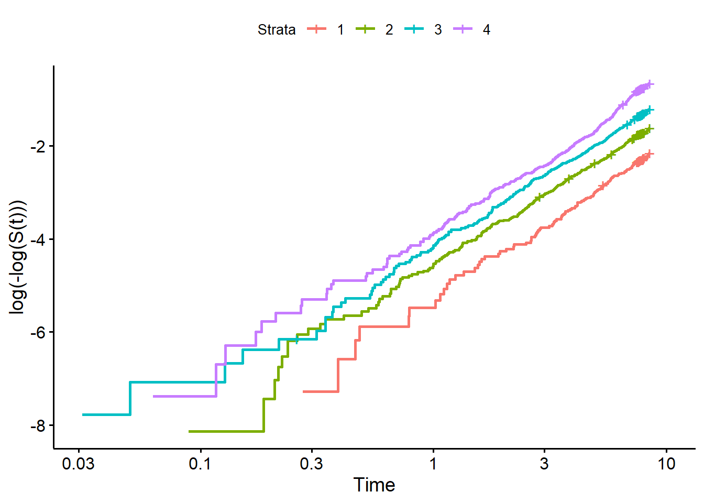
When we inspect a log-log plot, we want to see that the curves in the main portion of the plot (i.e. not the tails of the plot, where there are few events) are generally parallel over time. If the curves touch or cross, this indicates there is a violation of the PH assumption.
Looking at the curves for each level of age group above, they appear to be generally parallel with similar slopes over time. This looks acceptable and does not indicate a meaningful violation of the PH assumption. This may contradict the results of the tt() command above as statistical tests will often be significant for small deviations if you have a lot of power (e.g. if you have a large dataset). For this reason, we often prefer to visually inspect the data for obvious violations of the PH assumption.
The PH assumption can be also assessed using a statistical test based on the scaled Schoenfeld residuals. In principle, Schoenfeld residuals are independent of time. If a plot shows that Schoenfeld residuals are distributed in a non-random pattern against time, this is evidence of violation of the PH assumption.
We can test the proportional hazards assumption for each covariate in a Cox model using the cox.zph() command.
In a cox model including age_grp and frailty as covariates, we can examine if any of these variables violate the PH assumption by running the following command:
library(survminer)
library(survival)
m10 <- coxph(Surv(fu_years, death) ~ frailty + age_grp, data = whitehall)
cox.zph(m10) chisq df p
frailty 9.51 4 0.04945
age_grp 11.47 3 0.00943
GLOBAL 26.33 7 0.00044The cox.zph() command has two outputs. The first one is a chi-squared test and a p-value for testing the violation of PH assumption for each one of the variables included in the cox model. The second one is a global chi-squared test and a p-value for testing if there is any variable in our model that violates the PH assumption.
We observe that both frailty and age_grp variables violate the PH assumption.
Interpret a log-log plot for frailty (adjusted for age group) and assess if it violates the PH assumption.
library(survminer)
library(survival)
m11 <- coxph(Surv(fu_years, death) ~ strata(frailty) + age_grp, data = whitehall)
fit7 <- survfit(m11)
ggsurvplot(fit7, data = whitehall, fun = "cloglog")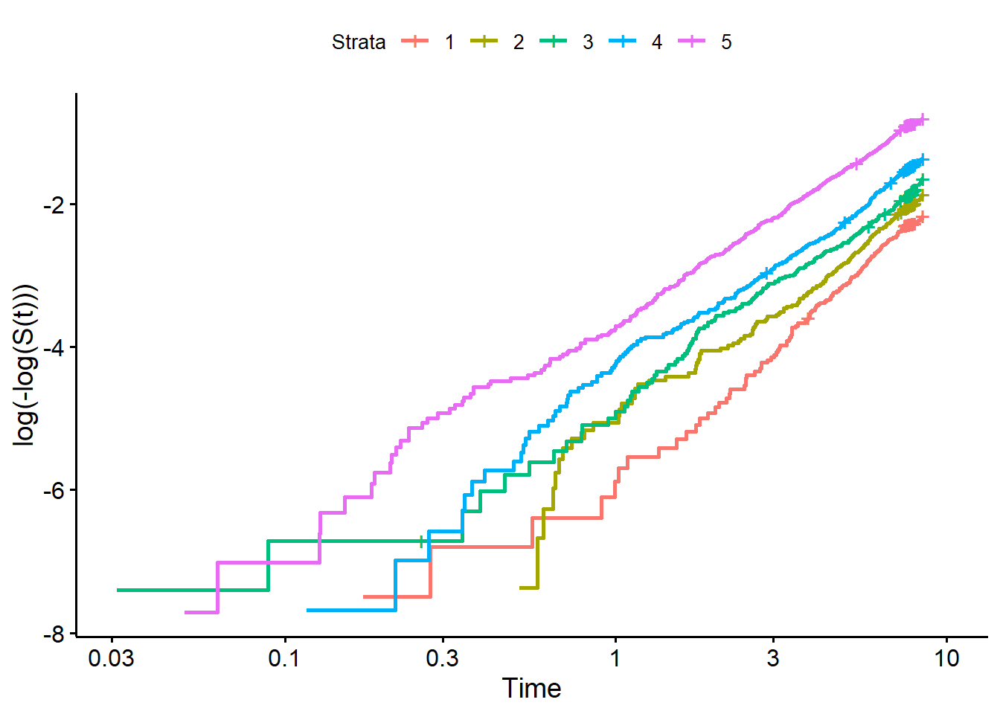
In this log-log plot, we see the curves for the different levels of frailty (levels 1-4) criss-cross and touch each other at several points over time. This is a clearer violation of the PH assumption.
If the PH assumption has been violated for a covariate, we can fit a stratified Cox model where we stratify by the covariate that violates the PH assumption.
To stratify a Cox model by a specific variable, we use the strata() command from the survival R package.
library(survminer)
library(survival)
m12 <- coxph(formula = Surv(fu_years, death) ~ strata(frailty) + age_grp, data = whitehall)
summary(m12)Call:
coxph(formula = Surv(fu_years, death) ~ strata(frailty) + age_grp,
data = whitehall)
n= 4327, number of events= 1526
coef exp(coef) se(coef) z Pr(>|z|)
age_grp2 0.56309 1.75610 0.09646 5.838 5.3e-09 ***
age_grp3 0.97174 2.64253 0.09811 9.904 < 2e-16 ***
age_grp4 1.45530 4.28579 0.10124 14.374 < 2e-16 ***
---
Signif. codes: 0 '***' 0.001 '**' 0.01 '*' 0.05 '.' 0.1 ' ' 1
exp(coef) exp(-coef) lower .95 upper .95
age_grp2 1.756 0.5694 1.454 2.122
age_grp3 2.643 0.3784 2.180 3.203
age_grp4 4.286 0.2333 3.514 5.226
Concordance= 0.612 (se = 0.007 )
Likelihood ratio test= 280.8 on 3 df, p=<2e-16
Wald test = 272.5 on 3 df, p=<2e-16
Score (logrank) test = 292.3 on 3 df, p=<2e-16Notice that you do not get any output regarding the variable ‘frailty’ that you stratified on, although R indicates in the formula that you have used this variable in the strata. You would still interpret the HR of age_grp as having been adjusted for frailty, though. So you would say that the hazard of dying was 4.3 times greater in the 81-95 age group compared to the 60-70 age group, once it was adjusted for frailty (as stratifying on a variable is another way to adjust for its association).
There are several situations where Poisson regression can be useful. It can be use to:
Here, we show a Poisson regression modelling the log(rate of disease) as the outcome.
In R, we can use the glm() command to fit a Poisson regression model as follows: glm(formula, data, family = poisson(link = “log”))
The command glm() is the same command that was used to fit a logistic regression model in the previous module. The only difference is that in Poisson regression we use the family poisson(link = “log”), whereas in logistic regression we use the family binomial(link = “logit”). Note that we use the offset(time) when we specify the formula of the Poisson regression to specify follow-up time. If you do not use the offset(time) to specify the period of follow-up time, then you will be analysing a log(count) [rather than rate].
To estimate the incidence rate ratio of death for current smokers compared to non-smokers, we run the following command:
model12 <- glm(death ~ offset(log(fu_years)) + currsmoker, data = whitehall, family = poisson(link = "log"))
summary(model12)
Call:
glm(formula = death ~ offset(log(fu_years)) + currsmoker, family = poisson(link = "log"),
data = whitehall)
Coefficients:
Estimate Std. Error z value Pr(>|z|)
(Intercept) -2.98556 0.02770 -107.770 <2e-16 ***
currsmoker 0.16891 0.07318 2.308 0.021 *
---
Signif. codes: 0 '***' 0.001 '**' 0.01 '*' 0.05 '.' 0.1 ' ' 1
(Dispersion parameter for poisson family taken to be 1)
Null deviance: 5138.5 on 4320 degrees of freedom
Residual deviance: 5133.3 on 4319 degrees of freedom
(6 observations deleted due to missingness)
AIC: 8179.3
Number of Fisher Scoring iterations: 6exp(cbind(coef(model12), confint(model12))) 2.5 % 97.5 %
(Intercept) 0.05051116 0.04781793 0.05330358
currsmoker 1.18401207 1.02323123 1.36335855The estimate in the row for ‘currsmoker’ is the rate ratio of death for current smokers compared to non-smokers. This output shows that the rate of death is 18% higher in current smokers compared to non-smokers (RR 1.18, 95% CI: 1.03-1.37). This association is statistically significant (p=0.02).
There are some assumptions that needs to be satisfied in order to use a Poisson model.
We can use the Poisson model when:
\[ log(\text{rate of disease}) = \beta_o + \beta_1X_1 \]
\[ \exp(\beta_o) = \text{ratebin unexposed group,} \exp(\beta_1) = \text{rate ratio} \]
Poisson regression model assumes that the events occur following POisson distribution.
A Poisson model can be written in many different ways. For examples, we can represents it as follows:
\[ log(\text{rate of disease}) = \beta_o + \beta_1X_1 + \beta_2X_2+\dots \]
\[ log(\text{events| time}) = \beta_o + \beta_1X_1 + \beta_2X_2+\dots \]
\[ log(events) - log (time) = \beta_o + \beta_1X_1 + \beta_2X_2+\dots \]
\[ log(events) = \beta_o + \beta_1X_1 + \beta_2X_2+\dots + log (time) \]
Use a Poisson regression to assess if current smoking associated with the rate of death, once adjusted for age group and frailty?
m13 <- glm(death ~ offset(log(fu_years)) + currsmoker + age_grp + frailty, data = whitehall, family = poisson(link = "log"))
summary(m13)
Call:
glm(formula = death ~ offset(log(fu_years)) + currsmoker + age_grp +
frailty, family = poisson(link = "log"), data = whitehall)
Coefficients:
Estimate Std. Error z value Pr(>|z|)
(Intercept) -4.35993 0.10691 -40.783 < 2e-16 ***
currsmoker 0.22259 0.07330 3.037 0.00239 **
age_grp2 0.54990 0.09650 5.698 1.21e-08 ***
age_grp3 0.94373 0.09820 9.610 < 2e-16 ***
age_grp4 1.38579 0.10113 13.703 < 2e-16 ***
frailty2 0.26967 0.10491 2.571 0.01015 *
frailty3 0.46882 0.10116 4.634 3.58e-06 ***
frailty4 0.76742 0.09329 8.226 < 2e-16 ***
frailty5 1.33908 0.08988 14.899 < 2e-16 ***
---
Signif. codes: 0 '***' 0.001 '**' 0.01 '*' 0.05 '.' 0.1 ' ' 1
(Dispersion parameter for poisson family taken to be 1)
Null deviance: 5138.5 on 4320 degrees of freedom
Residual deviance: 4352.0 on 4312 degrees of freedom
(6 observations deleted due to missingness)
AIC: 7412
Number of Fisher Scoring iterations: 6exp(cbind(coef(m13), confint(m13))) 2.5 % 97.5 %
(Intercept) 0.0127793 0.01031477 0.01568674
currsmoker 1.2493127 1.07940117 1.43892617
age_grp2 1.7330714 1.43907932 2.10137836
age_grp3 2.5695435 2.12622123 3.12556115
age_grp4 3.9979992 3.28848845 4.88987279
frailty2 1.3095324 1.06633005 1.60930782
frailty3 1.5981001 1.31163626 1.95061491
frailty4 2.1542055 1.79745201 2.59165466
frailty5 3.8155486 3.20640181 4.56166911The rate of death is 25% higher in current smokers compared to non-smokers, once adjusted for age group and frailty (RR 1.25, 95% CI: 1.09-1.43). This association is statistically significant (p=0.002).
The detailed explanation each section of the output from a Poisson regression model is as follows:
fu_years) in log scale, effectively modeling rates instead of simple counts.age_grp2, age_grp3, age_grp4) comparing each age group to the reference (likely the youngest age group).frailty2, frailty3, etc.) compared to a reference group (likely the lowest frailty level).Each predictor has an Estimate, Standard Error, z value, and Pr(>|z|) (p-value).
Here’s what each of these columns represents:
Interpretation of Key Predictors:
(Intercept): The intercept is -4.35993. Exponentiating this (exp(-4.35993) ≈ 0.0128) gives the baseline event rate for individuals in the reference categories of currsmoker, age_grp, and frailty.
currsmoker: The estimate for currsmoker is 0.22259, indicating that current smokers have a higher death rate compared to non-smokers.
exp(0.22259) ≈ 1.25, so current smokers have a 25% higher death rate than non-smokers.age_grp: The coefficients for age_grp2, age_grp3, and age_grp4 indicate that death rates increase with age:
(exp(0.5499) ≈ 1.73).exp(0.94373) ≈ 2.57, or a 157% higher death rate.exp(1.38579) ≈ 4.00, or a 300% higher death rate.frailty: The coefficients for frailty2, frailty3, etc., indicate that higher frailty levels are associated with increasing death rates compared to the reference frailty level:
exp(0.26967) ≈ 1.31, or a 31% higher death rate.exp(0.46882) ≈ 1.60.exp(0.76742) ≈ 2.15.exp(1.33908) ≈ 3.82, or a 282% higher death rate.